Lectures · Bài giảng › L09
Techniques of integration and improper integrals (Type I)Kỹ thuật tính tích phân và tích phân suy rộng (loại I)
Chapter 4 told us what the integral means; Chapter 5 is about finding antiderivatives when the integrand is not an obvious derivative, and about giving the integral a meaning on infinite intervals. This part covers three techniques (slides 5–28) and the first half of improper integrals (slides 29–46).
Teach each technique as a decision list: look at the integrand, recognise its type, and the case tells you the substitution. Do the exercises with a pencil: these methods are learned by doing, not by reading. The last slides (35–46) hinge on one idea only: an improper integral is a limit of ordinary integrals, so always replace $\infty$ by $t$ and let $t\to\infty$ at the end.
Chương 4 cho biết tích phân có nghĩa là gì; Chương 5 nói về cách tìm nguyên hàm khi hàm dưới dấu tích phân không phải đạo hàm hiển nhiên, và về việc cho tích phân một ý nghĩa trên khoảng vô hạn. Phần này gồm ba kỹ thuật (slide 5–28) và nửa đầu của tích phân suy rộng (slide 29–46).
Dạy mỗi kỹ thuật như một danh sách quyết định: nhìn hàm dưới dấu tích phân, nhận ra dạng của nó, và trường hợp sẽ cho biết phép đổi biến. Làm bài tập bằng bút chì: các phương pháp này học bằng cách làm chứ không phải đọc. Các slide cuối (35–46) chỉ xoay quanh một ý: tích phân suy rộng là giới hạn của các tích phân thường, nên luôn thay $\infty$ bằng $t$ và cho $t\to\infty$ ở bước cuối.
Textbook · Giáo trình: Thomas ch. 8 (8.3 trigonometric integrals, 8.4 trigonometric substitutions, 8.5 partial fractions, 8.8 improper integrals) · Stewart ch. 7 (7.2, 7.3, 7.4, 7.8)
Slide list · Danh sách slide (46)
Chapter 5: Techniques of Integration · Chương 5: Kỹ thuật tính tích phân
★ Context · Bổ trợ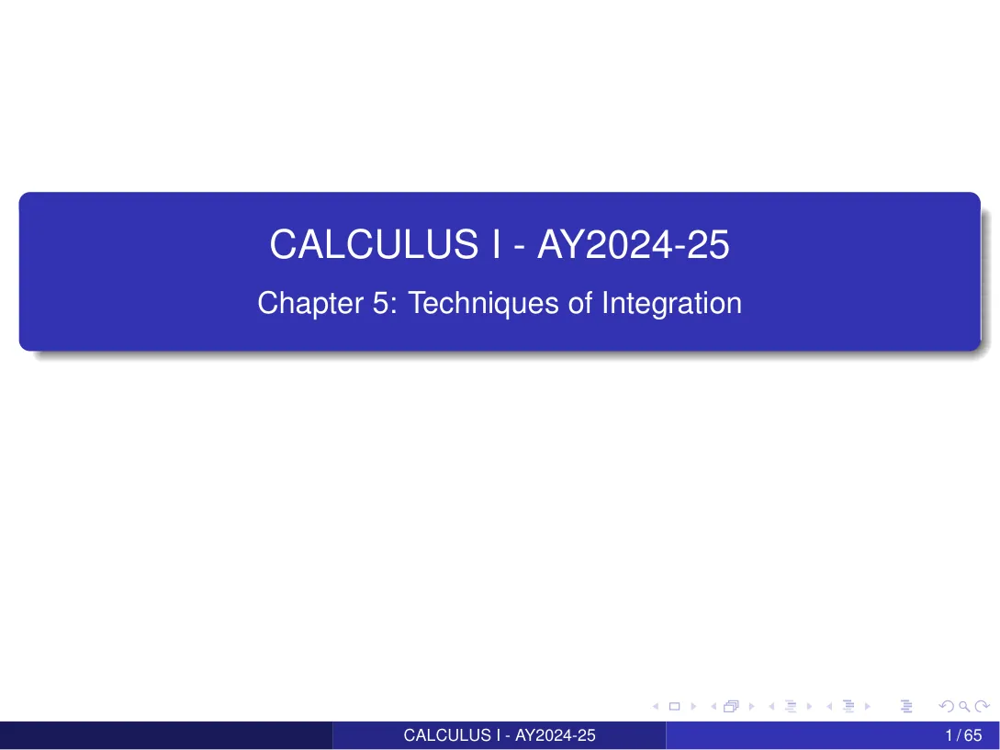
Title slide of Chapter 5. Chapter 4 gave the meaning of the integral and the Fundamental Theorem of Calculus; this chapter gives the tools to actually compute integrals.
Slide tiêu đề của Chương 5. Chương 4 cho ý nghĩa của tích phân và Định lý cơ bản của Giải tích; chương này cho các công cụ để thực sự tính tích phân.
Outline · Dàn bài
★ Context · Bổ trợSummary of the techniques · Tóm tắt các kỹ thuật
★★ Important · Quan trọng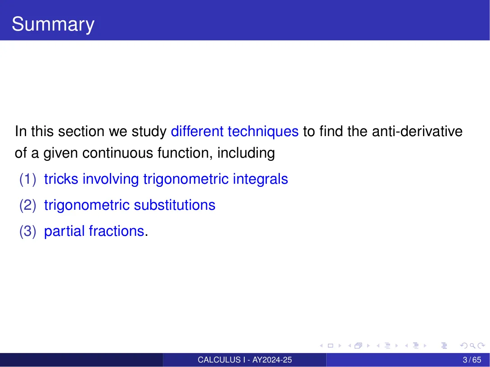
We study ways to find an antiderivative of a continuous function: (1) tricks for trigonometric integrals, (2) trigonometric substitutions, (3) partial fractions. Together with substitution and parts these cover almost every integral on the exam.
Ta học các cách tìm nguyên hàm của một hàm liên tục: (1) mẹo cho tích phân lượng giác, (2) đổi biến lượng giác, (3) phân thức đơn giản (phân thức riêng). Cùng với đổi biến và từng phần, chúng bao phủ gần như mọi tích phân trong đề thi.
Recap: substitution and parts for definite integrals · Nhắc lại: đổi biến và từng phần cho tích phân xác định
★★★ Core · Cốt lõi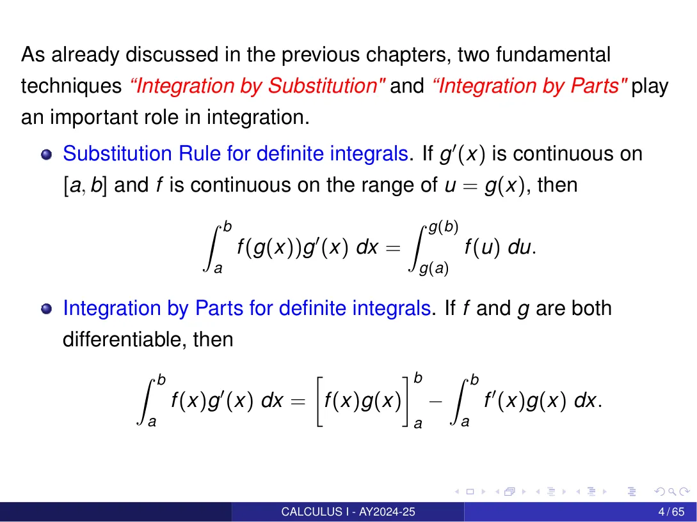
Two basic techniques from the previous lecture: substitution ($\int_a^bf(g(x))g'(x)dx=\int_{g(a)}^{g(b)}f(u)du$, the limits change with the variable) and parts ($\int_a^bfg'\,dx=[fg]_a^b-\int_a^bf'g\,dx$). Everything in this chapter is built on these two; if they are shaky, go back to Lecture 8 first.
Hai kỹ thuật cơ bản của bài trước: đổi biến ($\int_a^bf(g(x))g'(x)dx=\int_{g(a)}^{g(b)}f(u)du$, cận đổi theo biến) và từng phần ($\int_a^bfg'\,dx=[fg]_a^b-\int_a^bf'g\,dx$). Mọi thứ trong chương này dựa trên hai kỹ thuật đó; nếu còn yếu, hãy quay lại Bài 8 trước.
Warm-up: evaluate $\displaystyle\int_0^{\pi/2}x\cos x\,dx$ by parts.
Khởi động: tính $\displaystyle\int_0^{\pi/2}x\cos x\,dx$ bằng từng phần.
Answer and solution · Đáp án và lời giải
Answer · Đáp án: $\dfrac\pi2-1$
$u=x$, $dv=\cos x\,dx$: $[x\sin x]_0^{\pi/2}-\int_0^{\pi/2}\sin x\,dx=\frac\pi2-1$.
$u=x$, $dv=\cos x\,dx$: $[x\sin x]_0^{\pi/2}-\int_0^{\pi/2}\sin x\,dx=\frac\pi2-1$.
Trigonometric integrals: $\int\sin^mx\cos^nx\,dx$ · Tích phân lượng giác: $\int\sin^mx\cos^nx\,dx$
★★★ Core · Cốt lõi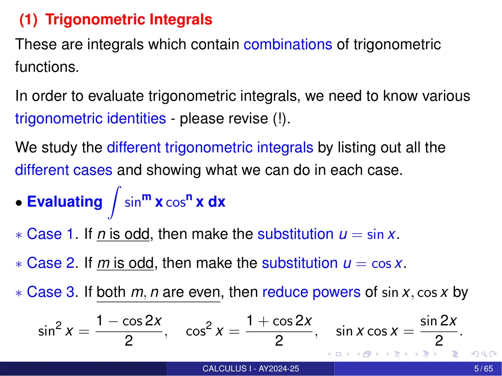
Integrals built from sines and cosines need the identity $\sin^2x+\cos^2x=1$, so be ready to revise your trigonometric identities. For $\int\sin^mx\cos^nx\,dx$ there are three cases:
- Case 1, $n$ odd: peel off one cosine, $\cos^nx=\cos^{n-1}x\cdot\cos x$, write the even power as $(1-\sin^2x)^{(n-1)/2}$ and put $u=\sin x$, $du=\cos x\,dx$.
- Case 2, $m$ odd: the same with the roles swapped, $u=\cos x$.
- Case 3, both even: nothing to peel off, so lower the powers with $\sin^2x=\frac{1-\cos2x}2$, $\cos^2x=\frac{1+\cos2x}2$, $\sin x\cos x=\frac{\sin2x}2$ (and repeat if an even power of $\cos2x$ appears).
If both are odd, either Case 1 or Case 2 works; use the one with the smaller odd power.
Tích phân gồm sin và cos cần đồng nhất thức $\sin^2x+\cos^2x=1$, nên hãy ôn lại các đồng nhất thức lượng giác. Với $\int\sin^mx\cos^nx\,dx$ có ba trường hợp:
- Trường hợp 1, $n$ lẻ: tách một cos, $\cos^nx=\cos^{n-1}x\cdot\cos x$, viết lũy thừa chẵn thành $(1-\sin^2x)^{(n-1)/2}$ rồi đặt $u=\sin x$, $du=\cos x\,dx$.
- Trường hợp 2, $m$ lẻ: tương tự với vai trò đổi chỗ, $u=\cos x$.
- Trường hợp 3, cả hai chẵn: không có gì để tách, nên hạ bậc bằng $\sin^2x=\frac{1-\cos2x}2$, $\cos^2x=\frac{1+\cos2x}2$, $\sin x\cos x=\frac{\sin2x}2$ (và lặp lại nếu xuất hiện lũy thừa chẵn của $\cos2x$).
Nếu cả hai đều lẻ thì Trường hợp 1 hay 2 đều được; dùng trường hợp có số mũ lẻ nhỏ hơn.
Trigonometric integrals with a clear decision rule are favourite exam questions: nothing to guess, just identify the case.
Tích phân lượng giác có quy tắc quyết định rõ ràng là câu hỏi ưa thích trong đề thi: không phải đoán, chỉ cần nhận ra trường hợp.
Evaluate $\displaystyle\int_0^{\pi/2}\sin^3x\cos^2x\,dx$ and $\displaystyle\int_0^{\pi}\sin^4x\,dx$. Which case is each?
Tính $\displaystyle\int_0^{\pi/2}\sin^3x\cos^2x\,dx$ và $\displaystyle\int_0^{\pi}\sin^4x\,dx$. Mỗi bài thuộc trường hợp nào?
Answer and solution · Đáp án và lời giải
Answer · Đáp án: $\dfrac2{15}$ and $\dfrac{3\pi}8$
First: $m=3$ is odd (Case 2), $u=\cos x$, limits $1\to0$: $\int_0^1(1-u^2)u^2du=\frac13-\frac15=\frac2{15}$. Second: both even (Case 3): $\sin^4x=\left(\frac{1-\cos2x}2\right)^2=\frac14\left(1-2\cos2x+\cos^22x\right)=\frac14\left(\frac32-2\cos2x+\frac{\cos4x}2\right)$, and over $[0,\pi]$ only the constant survives: $\frac14\cdot\frac32\cdot\pi=\frac{3\pi}8$.
Bài đầu: $m=3$ lẻ (Trường hợp 2), $u=\cos x$, cận $1\to0$: $\int_0^1(1-u^2)u^2du=\frac13-\frac15=\frac2{15}$. Bài sau: cả hai chẵn (Trường hợp 3): $\sin^4x=\left(\frac{1-\cos2x}2\right)^2=\frac14\left(1-2\cos2x+\cos^22x\right)=\frac14\left(\frac32-2\cos2x+\frac{\cos4x}2\right)$, và trên $[0,\pi]$ chỉ còn hằng số: $\frac14\cdot\frac32\cdot\pi=\frac{3\pi}8$.
Example: one integral for each case · Ví dụ: mỗi trường hợp một tích phân
★★★ Core · Cốt lõi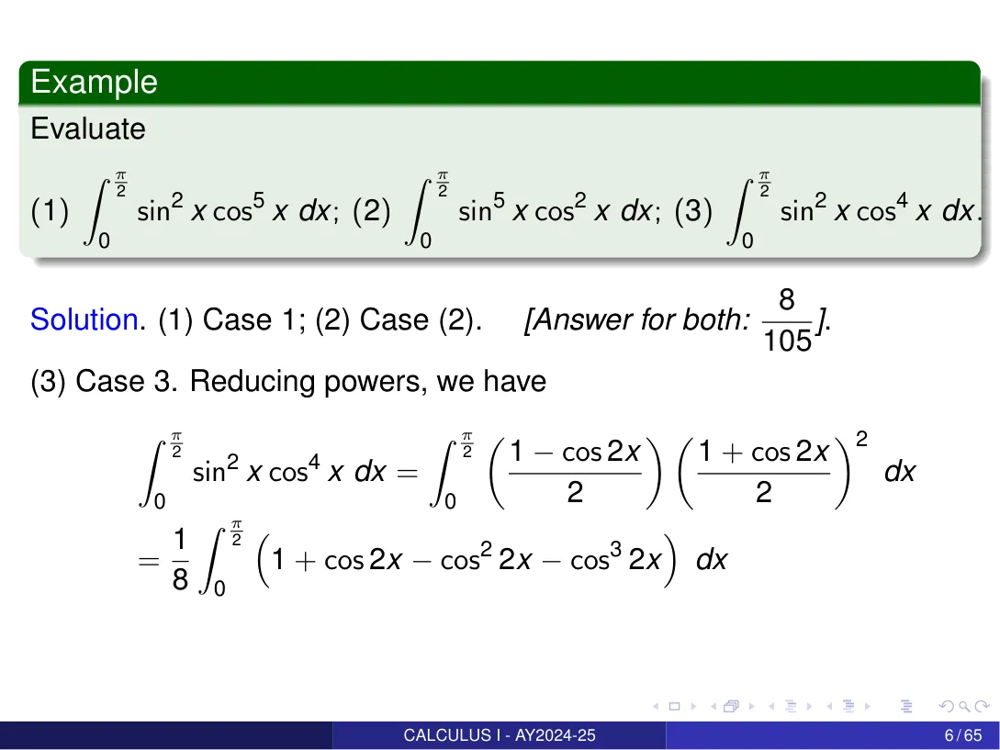
(1) $\int_0^{\pi/2}\sin^2x\cos^5x\,dx$: $n=5$ is odd, Case 1. (2) $\int_0^{\pi/2}\sin^5x\cos^2x\,dx$: $m=5$ is odd, Case 2. Both equal $\frac8{105}$; this is no accident, because $x\mapsto\frac\pi2-x$ swaps sine and cosine and maps $[0,\frac\pi2]$ onto itself. (3) $\int_0^{\pi/2}\sin^2x\cos^4x\,dx$: both powers even, Case 3. Replace $\sin^2x=\frac{1-\cos2x}2$ and $\cos^4x=\left(\frac{1+\cos2x}2\right)^2$; multiplying out,
$$\sin^2x\cos^4x=\tfrac18(1-\cos2x)(1+\cos2x)^2=\tfrac18\left(1+\cos2x-\cos^22x-\cos^32x\right).$$
(1) $\int_0^{\pi/2}\sin^2x\cos^5x\,dx$: $n=5$ lẻ, Trường hợp 1. (2) $\int_0^{\pi/2}\sin^5x\cos^2x\,dx$: $m=5$ lẻ, Trường hợp 2. Cả hai đều bằng $\frac8{105}$; không phải ngẫu nhiên, vì phép $x\mapsto\frac\pi2-x$ đổi chỗ sin và cos và biến $[0,\frac\pi2]$ thành chính nó. (3) $\int_0^{\pi/2}\sin^2x\cos^4x\,dx$: cả hai số mũ chẵn, Trường hợp 3. Thay $\sin^2x=\frac{1-\cos2x}2$ và $\cos^4x=\left(\frac{1+\cos2x}2\right)^2$; nhân ra,
$$\sin^2x\cos^4x=\tfrac18(1-\cos2x)(1+\cos2x)^2=\tfrac18\left(1+\cos2x-\cos^22x-\cos^32x\right).$$
Check the slide's value $\frac8{105}$ of $\int_0^{\pi/2}\sin^2x\cos^5x\,dx$ with $u=\sin x$, and explain why $\int_0^{\pi/2}\sin^5x\cos^2x\,dx$ has the same value.
Kiểm tra giá trị $\frac8{105}$ của $\int_0^{\pi/2}\sin^2x\cos^5x\,dx$ bằng $u=\sin x$, và giải thích vì sao $\int_0^{\pi/2}\sin^5x\cos^2x\,dx$ có cùng giá trị.
Answer and solution · Đáp án và lời giải
Answer · Đáp án: $\dfrac8{105}$
$\cos^5x\,dx=(1-\sin^2x)^2\cos x\,dx=(1-u^2)^2du$, limits $0\to1$: $\int_0^1u^2(1-u^2)^2du=\frac13-\frac25+\frac17=\frac{35-42+15}{105}=\frac8{105}$. For the other one substitute $x=\frac\pi2-s$: it turns into the first integral.
$\cos^5x\,dx=(1-\sin^2x)^2\cos x\,dx=(1-u^2)^2du$, cận $0\to1$: $\int_0^1u^2(1-u^2)^2du=\frac13-\frac25+\frac17=\frac{35-42+15}{105}=\frac8{105}$. Với tích phân kia đặt $x=\frac\pi2-s$: nó trở thành tích phân đầu.
Case 3 finished: the value $\frac\pi{32}$ · Kết thúc Trường hợp 3: giá trị $\frac\pi{32}$
★★★ Core · Cốt lõi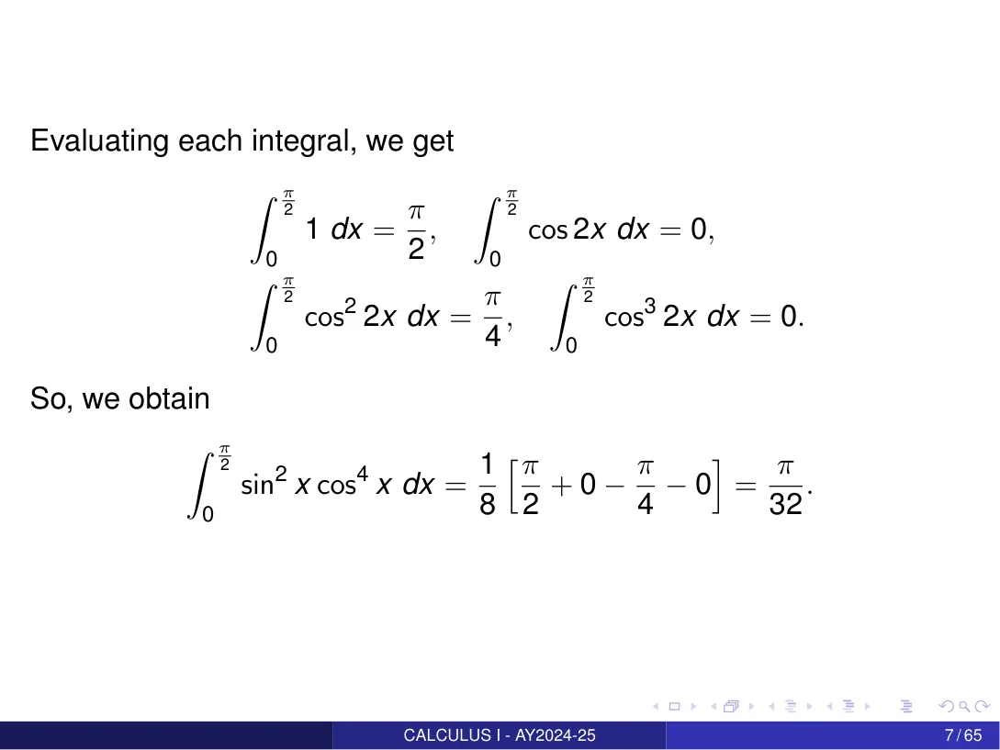
Integrate the four terms over $[0,\frac\pi2]$: $\int1\,dx=\frac\pi2$; $\int\cos2x\,dx=0$; $\int\cos^22x\,dx=\frac\pi4$ ($\cos^22x$ has period $\frac\pi2$ and mean value $\frac12$); $\int\cos^32x\,dx=0$ (an odd power of cosine integrates to zero over a symmetric interval of the half-period). Hence $\int_0^{\pi/2}\sin^2x\cos^4x\,dx=\frac18\left[\frac\pi2+0-\frac\pi4-0\right]=\frac\pi{32}$.
Lấy tích phân bốn số hạng trên $[0,\frac\pi2]$: $\int1\,dx=\frac\pi2$; $\int\cos2x\,dx=0$; $\int\cos^22x\,dx=\frac\pi4$ ($\cos^22x$ có chu kỳ $\frac\pi2$ và giá trị trung bình $\frac12$); $\int\cos^32x\,dx=0$ (lũy thừa lẻ của cos có tích phân bằng $0$ trên khoảng đối xứng của nửa chu kỳ). Vậy $\int_0^{\pi/2}\sin^2x\cos^4x\,dx=\frac18\left[\frac\pi2+0-\frac\pi4-0\right]=\frac\pi{32}$.
Evaluate $\displaystyle\int_0^{\pi/2}\cos^4x\,dx$ (Case 3 with $m=0$).
Tính $\displaystyle\int_0^{\pi/2}\cos^4x\,dx$ (Trường hợp 3 với $m=0$).
Answer and solution · Đáp án và lời giải
Answer · Đáp án: $\dfrac{3\pi}{16}$
$\cos^4x=\left(\frac{1+\cos2x}2\right)^2=\frac14\left(\frac32+2\cos2x+\frac{\cos4x}2\right)$; over $[0,\frac\pi2]$ the $\cos2x$ and $\cos4x$ terms integrate to $0$, leaving $\frac14\cdot\frac32\cdot\frac\pi2=\frac{3\pi}{16}$.
$\cos^4x=\left(\frac{1+\cos2x}2\right)^2=\frac14\left(\frac32+2\cos2x+\frac{\cos4x}2\right)$; trên $[0,\frac\pi2]$ các số hạng $\cos2x$ và $\cos4x$ có tích phân $0$, còn lại $\frac14\cdot\frac32\cdot\frac\pi2=\frac{3\pi}{16}$.
Trigonometric integrals: $\int\tan^mx\sec^nx\,dx$ · Tích phân lượng giác: $\int\tan^mx\sec^nx\,dx$
★★★ Core · Cốt lõi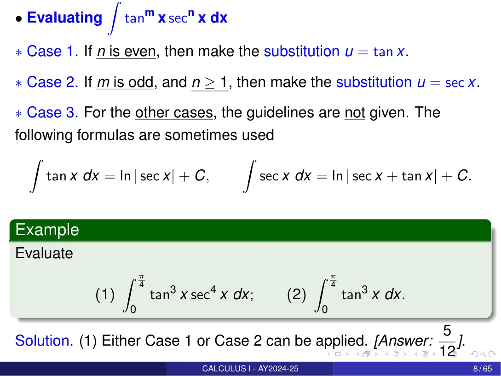
Here the working identities are $1+\tan^2x=\sec^2x$ and the derivatives $(\tan x)'=\sec^2x$, $(\sec x)'=\sec x\tan x$.
- Case 1, $n$ even: peel off $\sec^2x$, turn the remaining even power of $\sec$ into tangents, $u=\tan x$.
- Case 2, $m$ odd and $n\ge1$: peel off $\sec x\tan x$, turn the remaining even power of $\tan$ into secants with $\tan^2x=\sec^2x-1$, $u=\sec x$.
- Case 3, the rest: no fixed recipe; use $\tan^2x=\sec^2x-1$ and the formulas $\int\tan x\,dx=\ln|\sec x|+C$, $\int\sec x\,dx=\ln|\sec x+\tan x|+C$.
Example (1): $\int_0^{\pi/4}\tan^3x\sec^4x\,dx$ has $n=4$ even and $m=3$ odd, so both cases apply. With $u=\tan x$: $\int_0^1u^3(1+u^2)du=\frac14+\frac16=\frac5{12}$.
Ở đây các đồng nhất thức làm việc là $1+\tan^2x=\sec^2x$ và các đạo hàm $(\tan x)'=\sec^2x$, $(\sec x)'=\sec x\tan x$.
- Trường hợp 1, $n$ chẵn: tách $\sec^2x$, đổi lũy thừa chẵn còn lại của $\sec$ thành tan, $u=\tan x$.
- Trường hợp 2, $m$ lẻ và $n\ge1$: tách $\sec x\tan x$, đổi lũy thừa chẵn còn lại của $\tan$ thành sec bằng $\tan^2x=\sec^2x-1$, $u=\sec x$.
- Trường hợp 3, còn lại: không có công thức cố định; dùng $\tan^2x=\sec^2x-1$ và các công thức $\int\tan x\,dx=\ln|\sec x|+C$, $\int\sec x\,dx=\ln|\sec x+\tan x|+C$.
Ví dụ (1): $\int_0^{\pi/4}\tan^3x\sec^4x\,dx$ có $n=4$ chẵn và $m=3$ lẻ, nên cả hai trường hợp đều dùng được. Với $u=\tan x$: $\int_0^1u^3(1+u^2)du=\frac14+\frac16=\frac5{12}$.
Evaluate $\displaystyle\int_0^{\pi/3}\tan x\sec^3x\,dx$ and $\displaystyle\int_0^{\pi/4}\tan^2x\sec^4x\,dx$, naming the case.
Tính $\displaystyle\int_0^{\pi/3}\tan x\sec^3x\,dx$ và $\displaystyle\int_0^{\pi/4}\tan^2x\sec^4x\,dx$, nêu rõ trường hợp.
Answer and solution · Đáp án và lời giải
Answer · Đáp án: $\dfrac73$ and $\dfrac8{15}$
First: $m=1$ odd, Case 2, $u=\sec x$, $du=\sec x\tan x\,dx$, limits $1\to2$: $\int_1^2u^2du=\frac{8-1}3=\frac73$. Second: $n=4$ even, Case 1, $u=\tan x$, limits $0\to1$: $\int_0^1u^2(1+u^2)du=\frac13+\frac15=\frac8{15}$.
Bài đầu: $m=1$ lẻ, Trường hợp 2, $u=\sec x$, $du=\sec x\tan x\,dx$, cận $1\to2$: $\int_1^2u^2du=\frac{8-1}3=\frac73$. Bài sau: $n=4$ chẵn, Trường hợp 1, $u=\tan x$, cận $0\to1$: $\int_0^1u^2(1+u^2)du=\frac13+\frac15=\frac8{15}$.
Case 3 example: $\int\tan^3x\,dx$ · Ví dụ Trường hợp 3: $\int\tan^3x\,dx$
★★★ Core · Cốt lõi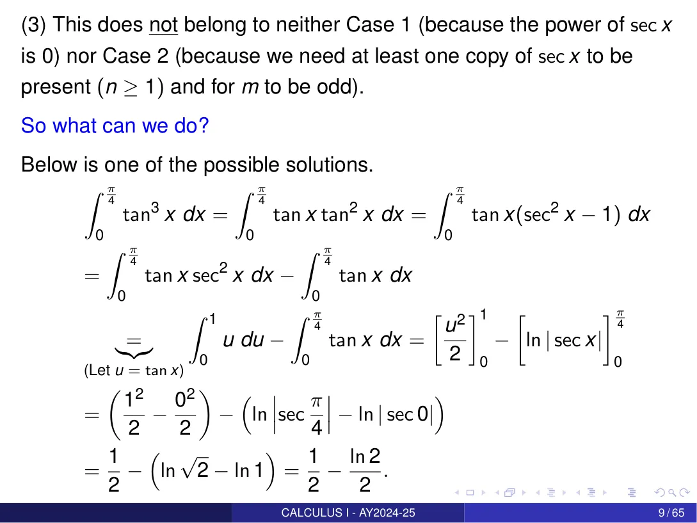
(2) $\int_0^{\pi/4}\tan^3x\,dx$ has no secant ($n=0$) so neither Case 1 nor Case 2 applies. Trick: peel off $\tan^2x=\sec^2x-1$:
$$\tan^3x=\tan x(\sec^2x-1)=\tan x\sec^2x-\tan x.$$
The first part is $u=\tan x$: $\int_0^1u\,du=\frac12$. The second part is $\int_0^{\pi/4}\tan x\,dx=[\ln|\sec x|]_0^{\pi/4}=\ln\sqrt2-\ln1=\frac{\ln2}2$. So the integral equals $\frac12-\frac{\ln2}2\approx0.153$.
(2) $\int_0^{\pi/4}\tan^3x\,dx$ không có sec ($n=0$) nên Trường hợp 1 và 2 đều không dùng được. Mẹo: tách $\tan^2x=\sec^2x-1$:
$$\tan^3x=\tan x(\sec^2x-1)=\tan x\sec^2x-\tan x.$$
Phần đầu: $u=\tan x$, $\int_0^1u\,du=\frac12$. Phần sau: $\int_0^{\pi/4}\tan x\,dx=[\ln|\sec x|]_0^{\pi/4}=\ln\sqrt2-\ln1=\frac{\ln2}2$. Vậy tích phân bằng $\frac12-\frac{\ln2}2\approx0.153$.
Check numerically that $\int_0^{\pi/4}\tan^3x\,dx=\frac12-\frac{\ln2}2$, and evaluate $\displaystyle\int_0^{\pi/3}\tan^2x\,dx$.
Kiểm tra bằng số rằng $\int_0^{\pi/4}\tan^3x\,dx=\frac12-\frac{\ln2}2$, và tính $\displaystyle\int_0^{\pi/3}\tan^2x\,dx$.
Answer and solution · Đáp án và lời giải
Answer · Đáp án: $0.1534\ldots$ and $\sqrt3-\dfrac\pi3$
$\frac12-\frac{\ln2}2=0.5-0.3466=0.1534$, equal to the numerical integral. For the second use $\tan^2x=\sec^2x-1$: $[\tan x-x]_0^{\pi/3}=\sqrt3-\frac\pi3\approx0.685$.
$\frac12-\frac{\ln2}2=0.5-0.3466=0.1534$, bằng tích phân số. Với bài sau dùng $\tan^2x=\sec^2x-1$: $[\tan x-x]_0^{\pi/3}=\sqrt3-\frac\pi3\approx0.685$.
Products of sines and cosines: product-to-sum identities · Tích sin và cos: công thức biến tích thành tổng
★★★ Core · Cốt lõi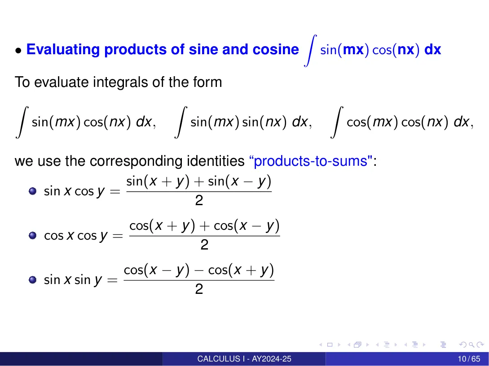
For $\int\sin mx\cos nx\,dx$, $\int\sin mx\sin nx\,dx$, $\int\cos mx\cos nx\,dx$ with different frequencies use the products-to-sums identities, which turn a product into a sum of single sines or cosines:
$$\sin x\cos y=\frac{\sin(x+y)+\sin(x-y)}2,\quad\cos x\cos y=\frac{\cos(x+y)+\cos(x-y)}2,\quad\sin x\sin y=\frac{\cos(x-y)-\cos(x+y)}2.$$
They come from adding and subtracting the addition formulas for $\sin(x\pm y)$ and $\cos(x\pm y)$, so you can re-derive them if you forget.
Với $\int\sin mx\cos nx\,dx$, $\int\sin mx\sin nx\,dx$, $\int\cos mx\cos nx\,dx$ có tần số khác nhau, dùng các công thức biến tích thành tổng, biến một tích thành tổng của các sin hoặc cos đơn:
$$\sin x\cos y=\frac{\sin(x+y)+\sin(x-y)}2,\quad\cos x\cos y=\frac{\cos(x+y)+\cos(x-y)}2,\quad\sin x\sin y=\frac{\cos(x-y)-\cos(x+y)}2.$$
Chúng suy ra từ việc cộng và trừ các công thức cộng của $\sin(x\pm y)$ và $\cos(x\pm y)$, nên có thể tự dựng lại nếu quên.
Evaluate $\displaystyle\int_0^\pi\sin2x\cos3x\,dx$, $\displaystyle\int_{-\pi}^{\pi}\cos2x\cos3x\,dx$ and $\displaystyle\int_0^{\pi/4}\sin x\sin3x\,dx$.
Tính $\displaystyle\int_0^\pi\sin2x\cos3x\,dx$, $\displaystyle\int_{-\pi}^{\pi}\cos2x\cos3x\,dx$ và $\displaystyle\int_0^{\pi/4}\sin x\sin3x\,dx$.
Answer and solution · Đáp án và lời giải
Answer · Đáp án: $-\dfrac45$, $0$ and $\dfrac14$
First: $\sin2x\cos3x=\frac{\sin5x-\sin x}2$, so $\frac12\left[\frac25-2\right]=-\frac45$. Second: $\cos2x\cos3x=\frac{\cos5x+\cos x}2$, and both cosines integrate to $0$ over $[-\pi,\pi]$ (whole periods): $0$ (the orthogonality of $\cos 2x$ and $\cos 3x$). Third: $\sin x\sin3x=\frac{\cos2x-\cos4x}2$, so $\frac12\left[\frac12-0\right]=\frac14$.
Bài 1: $\sin2x\cos3x=\frac{\sin5x-\sin x}2$, nên $\frac12\left[\frac25-2\right]=-\frac45$. Bài 2: $\cos2x\cos3x=\frac{\cos5x+\cos x}2$, và cả hai cos đều có tích phân $0$ trên $[-\pi,\pi]$ (đủ chu kỳ): $0$ (tính trực giao của $\cos 2x$ và $\cos 3x$). Bài 3: $\sin x\sin3x=\frac{\cos2x-\cos4x}2$, nên $\frac12\left[\frac12-0\right]=\frac14$.
Example: $\int_0^{\pi/2}\sin3x\cos5x\,dx$ · Ví dụ: $\int_0^{\pi/2}\sin3x\cos5x\,dx$
★★★ Core · Cốt lõi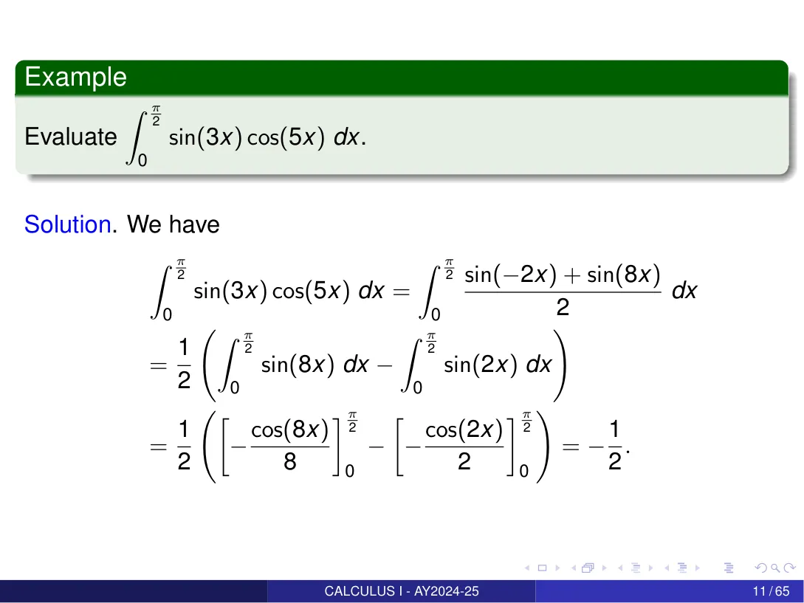
Apply the first identity with $x\to3x$, $y\to5x$: $\sin3x\cos5x=\frac{\sin8x+\sin(-2x)}2=\frac{\sin8x-\sin2x}2$ (sine is odd). Then $\int_0^{\pi/2}\sin8x\,dx=\left[-\frac{\cos8x}8\right]_0^{\pi/2}=0$ and $\int_0^{\pi/2}\sin2x\,dx=\left[-\frac{\cos2x}2\right]_0^{\pi/2}=1$, so the answer is $\frac12(0-1)=-\frac12$. Watch the sign: the order matters, since $\sin5x\cos3x$ gives $+\frac12$.
Áp dụng công thức đầu với $x\to3x$, $y\to5x$: $\sin3x\cos5x=\frac{\sin8x+\sin(-2x)}2=\frac{\sin8x-\sin2x}2$ (sin là hàm lẻ). Khi đó $\int_0^{\pi/2}\sin8x\,dx=\left[-\frac{\cos8x}8\right]_0^{\pi/2}=0$ và $\int_0^{\pi/2}\sin2x\,dx=\left[-\frac{\cos2x}2\right]_0^{\pi/2}=1$, nên đáp số là $\frac12(0-1)=-\frac12$. Chú ý dấu: thứ tự có ý nghĩa, vì $\sin5x\cos3x$ cho $+\frac12$.
Evaluate $\displaystyle\int_0^{\pi/2}\sin5x\cos3x\,dx$ and compare with the slide.
Tính $\displaystyle\int_0^{\pi/2}\sin5x\cos3x\,dx$ và so sánh với slide.
Answer and solution · Đáp án và lời giải
Answer · Đáp án: $\dfrac12$ (the slide's integral is $-\dfrac12$)
$\sin5x\cos3x=\frac{\sin8x+\sin2x}2$, so $\frac12(0+1)=\frac12$, the opposite sign of $\int_0^{\pi/2}\sin3x\cos5x\,dx=-\frac12$.
$\sin5x\cos3x=\frac{\sin8x+\sin2x}2$, nên $\frac12(0+1)=\frac12$, trái dấu với $\int_0^{\pi/2}\sin3x\cos5x\,dx=-\frac12$.
Trigonometric substitution: the area of a circle · Đổi biến lượng giác: diện tích hình tròn
★★★ Core · Cốt lõi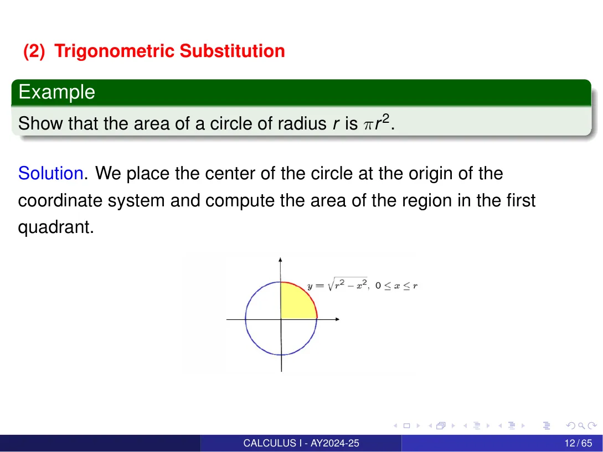
Our first example of a trigonometric substitution is the familiar area of a circle of radius $r$. Put the centre at the origin and compute the quarter in the first quadrant: it is the region under $y=\sqrt{r^2-x^2}$, $0\le x\le r$ (the picture on the slide). The obstacle is the square root of a difference of squares; we remove it with $x=r\sin\theta$, which turns $r^2-x^2$ into $r^2\cos^2\theta$.
Ví dụ đầu tiên về đổi biến lượng giác là diện tích quen thuộc của hình tròn bán kính $r$. Đặt tâm ở gốc tọa độ và tính một phần tư trong góc phần tư thứ nhất: đó là miền dưới $y=\sqrt{r^2-x^2}$, $0\le x\le r$ (hình trên slide). Chướng ngại là căn của một hiệu hai bình phương; ta loại nó bằng $x=r\sin\theta$, biến $r^2-x^2$ thành $r^2\cos^2\theta$.
The computation: $\frac{\pi r^2}4$ · Phép tính: $\frac{\pi r^2}4$
★★★ Core · Cốt lõi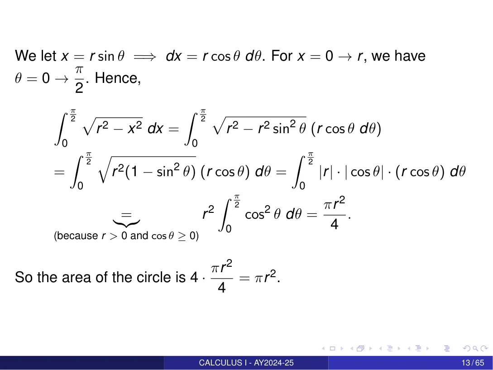
Put $x=r\sin\theta$, $dx=r\cos\theta\,d\theta$. As $x$ goes from $0$ to $r$, $\theta$ goes from $0$ to $\frac\pi2$ (the new limits). Then $\sqrt{r^2-r^2\sin^2\theta}=\sqrt{r^2\cos^2\theta}=|r|\,|\cos\theta|=r\cos\theta$ because $r>0$ and $\cos\theta\ge0$ on $[0,\frac\pi2]$. This step is why the angle ranges in the table on the next slide are restricted. So
$$\int_0^r\sqrt{r^2-x^2}\,dx=r^2\int_0^{\pi/2}\cos^2\theta\,d\theta=\frac{\pi r^2}4,$$
and the whole circle has area $4\cdot\frac{\pi r^2}4=\pi r^2$.
Đặt $x=r\sin\theta$, $dx=r\cos\theta\,d\theta$. Khi $x$ đi từ $0$ đến $r$ thì $\theta$ đi từ $0$ đến $\frac\pi2$ (cận mới). Khi đó $\sqrt{r^2-r^2\sin^2\theta}=\sqrt{r^2\cos^2\theta}=|r|\,|\cos\theta|=r\cos\theta$ vì $r>0$ và $\cos\theta\ge0$ trên $[0,\frac\pi2]$. Bước này là lý do các khoảng của góc trong bảng ở slide sau bị giới hạn. Vậy
$$\int_0^r\sqrt{r^2-x^2}\,dx=r^2\int_0^{\pi/2}\cos^2\theta\,d\theta=\frac{\pi r^2}4,$$
và cả hình tròn có diện tích $4\cdot\frac{\pi r^2}4=\pi r^2$.
Use $x=2\sin\theta$ to evaluate $\displaystyle\int_0^2\sqrt{4-x^2}\,dx$ and $x=\sin\theta$ for $\displaystyle\int_0^1x^2\sqrt{1-x^2}\,dx$.
Dùng $x=2\sin\theta$ tính $\displaystyle\int_0^2\sqrt{4-x^2}\,dx$ và $x=\sin\theta$ cho $\displaystyle\int_0^1x^2\sqrt{1-x^2}\,dx$.
Answer and solution · Đáp án và lời giải
Answer · Đáp án: $\pi$ and $\dfrac\pi{16}$
First: $\sqrt{4-x^2}=2\cos\theta$, $dx=2\cos\theta\,d\theta$: $4\int_0^{\pi/2}\cos^2\theta\,d\theta=\pi$ (a quarter of a circle of radius $2$). Second: $\int_0^{\pi/2}\sin^2\theta\cos^2\theta\,d\theta=\int_0^{\pi/2}\frac{\sin^22\theta}4d\theta=\frac14\cdot\frac\pi4=\frac\pi{16}$.
Bài đầu: $\sqrt{4-x^2}=2\cos\theta$, $dx=2\cos\theta\,d\theta$: $4\int_0^{\pi/2}\cos^2\theta\,d\theta=\pi$ (một phần tư hình tròn bán kính $2$). Bài sau: $\int_0^{\pi/2}\sin^2\theta\cos^2\theta\,d\theta=\int_0^{\pi/2}\frac{\sin^22\theta}4d\theta=\frac14\cdot\frac\pi4=\frac\pi{16}$.
The three standard trigonometric substitutions · Ba phép đổi biến lượng giác chuẩn
★★★ Core · Cốt lõi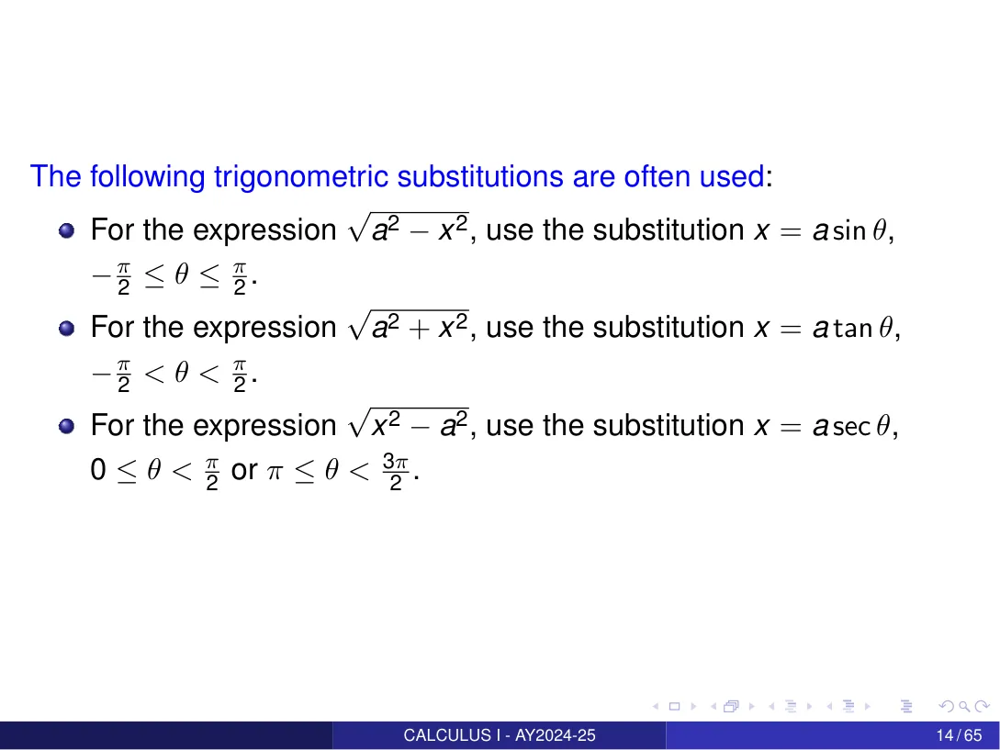
Recognise the expression under the root and choose:
- $\sqrt{a^2-x^2}$: $x=a\sin\theta$, $-\frac\pi2\le\theta\le\frac\pi2$ (then $\sqrt{a^2-x^2}=a\cos\theta$, $dx=a\cos\theta\,d\theta$).
- $\sqrt{a^2+x^2}$: $x=a\tan\theta$, $-\frac\pi2<\theta<\frac\pi2$ (then $\sqrt{a^2+x^2}=a\sec\theta$, $dx=a\sec^2\theta\,d\theta$).
- $\sqrt{x^2-a^2}$: $x=a\sec\theta$, $0\le\theta<\frac\pi2$ or $\pi\le\theta<\frac{3\pi}2$ (then $\sqrt{x^2-a^2}=a\tan\theta$, $dx=a\sec\theta\tan\theta\,d\theta$).
The ranges are chosen so that the root becomes $a\cos\theta$, $a\sec\theta$, $a\tan\theta$ without absolute values. Memory aid: the identities $1-\sin^2=\cos^2$, $1+\tan^2=\sec^2$, $\sec^2-1=\tan^2$ are exactly the three cases.
Nhận dạng biểu thức dưới căn và chọn:
- $\sqrt{a^2-x^2}$: $x=a\sin\theta$, $-\frac\pi2\le\theta\le\frac\pi2$ (khi đó $\sqrt{a^2-x^2}=a\cos\theta$, $dx=a\cos\theta\,d\theta$).
- $\sqrt{a^2+x^2}$: $x=a\tan\theta$, $-\frac\pi2<\theta<\frac\pi2$ (khi đó $\sqrt{a^2+x^2}=a\sec\theta$, $dx=a\sec^2\theta\,d\theta$).
- $\sqrt{x^2-a^2}$: $x=a\sec\theta$, $0\le\theta<\frac\pi2$ hoặc $\pi\le\theta<\frac{3\pi}2$ (khi đó $\sqrt{x^2-a^2}=a\tan\theta$, $dx=a\sec\theta\tan\theta\,d\theta$).
Các khoảng được chọn để căn trở thành $a\cos\theta$, $a\sec\theta$, $a\tan\theta$ mà không cần giá trị tuyệt đối. Mẹo nhớ: các đồng nhất thức $1-\sin^2=\cos^2$, $1+\tan^2=\sec^2$, $\sec^2-1=\tan^2$ chính là ba trường hợp.
The table is the whole technique; a common exam question gives an integrand with $\sqrt{x^2\pm a^2}$ and asks which substitution to use.
Bảng này là toàn bộ kỹ thuật; câu hỏi thi thường gặp cho hàm có $\sqrt{x^2\pm a^2}$ và hỏi dùng phép đổi biến nào.
Choose a trigonometric substitution and evaluate $\displaystyle\int_0^{\sqrt3}\frac{dx}{(1+x^2)^{3/2}}$ and $\displaystyle\int_2^4\frac{\sqrt{x^2-4}}x\,dx$.
Chọn phép đổi biến lượng giác và tính $\displaystyle\int_0^{\sqrt3}\frac{dx}{(1+x^2)^{3/2}}$ và $\displaystyle\int_2^4\frac{\sqrt{x^2-4}}x\,dx$.
Answer and solution · Đáp án và lời giải
Answer · Đáp án: $\dfrac{\sqrt3}2$ and $2\sqrt3-\dfrac{2\pi}3$
First: $x=\tan\theta$, $(1+x^2)^{3/2}=\sec^3\theta$, $dx=\sec^2\theta\,d\theta$: $\int_0^{\pi/3}\cos\theta\,d\theta=\sin\frac\pi3=\frac{\sqrt3}2$. Second: $x=2\sec\theta$, $\sqrt{x^2-4}=2\tan\theta$, $dx=2\sec\theta\tan\theta\,d\theta$, limits $0\to\frac\pi3$: $\int_0^{\pi/3}2\tan^2\theta\,d\theta=2[\tan\theta-\theta]_0^{\pi/3}=2\sqrt3-\frac{2\pi}3$.
Bài đầu: $x=\tan\theta$, $(1+x^2)^{3/2}=\sec^3\theta$, $dx=\sec^2\theta\,d\theta$: $\int_0^{\pi/3}\cos\theta\,d\theta=\sin\frac\pi3=\frac{\sqrt3}2$. Bài sau: $x=2\sec\theta$, $\sqrt{x^2-4}=2\tan\theta$, $dx=2\sec\theta\tan\theta\,d\theta$, cận $0\to\frac\pi3$: $\int_0^{\pi/3}2\tan^2\theta\,d\theta=2[\tan\theta-\theta]_0^{\pi/3}=2\sqrt3-\frac{2\pi}3$.
Partial fractions: what we need · Phân thức đơn giản: cần những gì
★★ Important · Quan trọng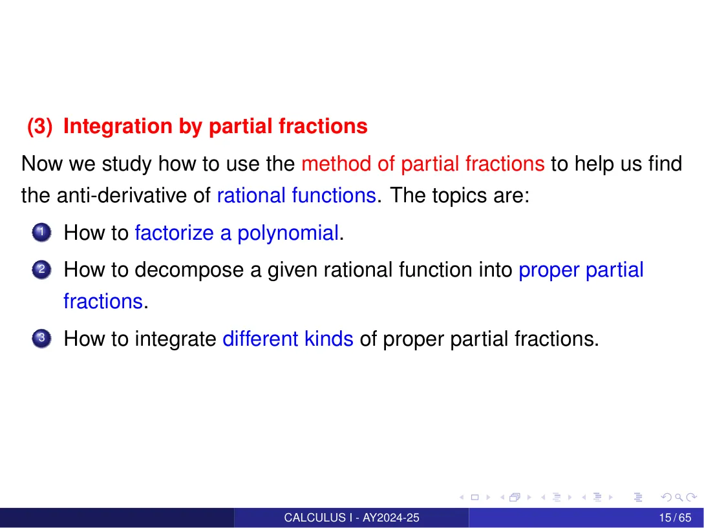
Third technique: integrating rational functions by partial fractions. Three tasks: (1) factorise a polynomial; (2) decompose a rational function into proper partial fractions; (3) integrate each partial fraction.
Kỹ thuật thứ ba: tích phân hàm hữu tỉ bằng phân thức đơn giản. Ba việc: (1) phân tích đa thức thành nhân tử; (2) tách hàm hữu tỉ thành các phân thức đơn giản thực sự (phân thức riêng); (3) lấy tích phân từng phân thức.
Factorising polynomials and irreducible factors · Phân tích đa thức và nhân tử bất khả quy
★★★ Core · Cốt lõi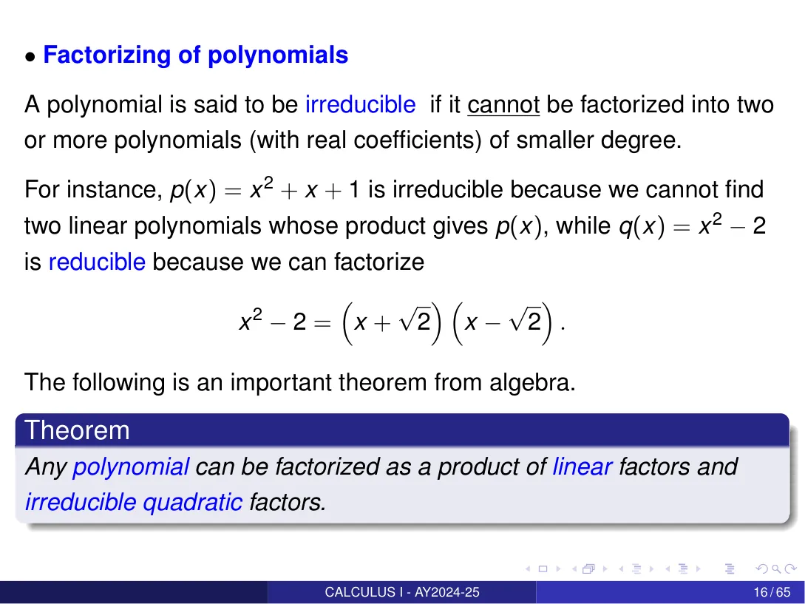
A polynomial is irreducible if it cannot be factorised into polynomials of smaller degree with real coefficients. $x^2+x+1$ is irreducible (no two linear factors multiply to it); $x^2-2=(x+\sqrt2)(x-\sqrt2)$ is reducible. Theorem from algebra: every real polynomial is a product of linear factors and irreducible quadratic factors. This is what makes partial fractions always possible.
Một đa thức là bất khả quy nếu không thể phân tích thành các đa thức bậc thấp hơn với hệ số thực. $x^2+x+1$ bất khả quy (không có hai thừa số bậc nhất nào nhân ra nó); $x^2-2=(x+\sqrt2)(x-\sqrt2)$ khả quy. Định lý đại số: mọi đa thức thực đều là tích của các nhân tử bậc nhất và các nhân tử bậc hai bất khả quy. Chính điều này làm cho phân thức đơn giản luôn thực hiện được.
Factorise $x^4-1$ and $x^3-1$ completely over the real numbers and say which factors are irreducible.
Phân tích hoàn toàn $x^4-1$ và $x^3-1$ trên tập số thực và cho biết nhân tử nào bất khả quy.
Answer and solution · Đáp án và lời giải
Answer · Đáp án: $(x-1)(x+1)(x^2+1)$ and $(x-1)(x^2+x+1)$
$x^4-1=(x^2-1)(x^2+1)=(x-1)(x+1)(x^2+1)$ and $x^3-1=(x-1)(x^2+x+1)$. The two quadratics $x^2+1$ and $x^2+x+1$ have discriminants $-4$ and $-3<0$: irreducible.
$x^4-1=(x^2-1)(x^2+1)=(x-1)(x+1)(x^2+1)$ và $x^3-1=(x-1)(x^2+x+1)$. Hai tam thức $x^2+1$ và $x^2+x+1$ có biệt thức $-4$ và $-3<0$: bất khả quy.
Remarks: the discriminant test · Nhận xét: kiểm tra bằng biệt thức
★★★ Core · Cốt lõi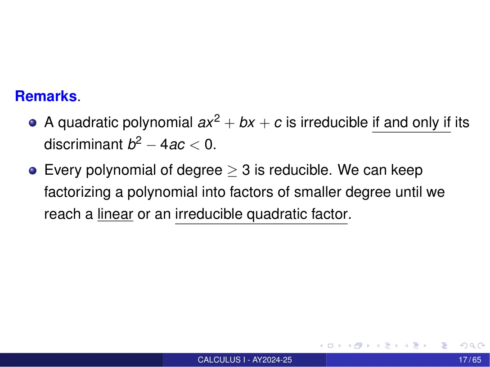
A quadratic $ax^2+bx+c$ is irreducible if and only if its discriminant $b^2-4ac<0$ (no real roots). Every polynomial of degree $\ge3$ is reducible: keep factorising until only linear and irreducible quadratic factors remain.
Tam thức $ax^2+bx+c$ bất khả quy khi và chỉ khi biệt thức $b^2-4ac<0$ (không có nghiệm thực). Mọi đa thức bậc $\ge3$ đều khả quy: tiếp tục phân tích cho đến khi chỉ còn nhân tử bậc nhất và bậc hai bất khả quy.
Which of $x^2+2x+5$, $x^2+2x-3$, $4x^2-4x+1$ are irreducible? Factorise the others.
Tam thức nào trong $x^2+2x+5$, $x^2+2x-3$, $4x^2-4x+1$ bất khả quy? Phân tích các tam thức còn lại.
Answer and solution · Đáp án và lời giải
Answer · Đáp án: only $x^2+2x+5$; $x^2+2x-3=(x+3)(x-1)$, $4x^2-4x+1=(2x-1)^2$
Discriminants: $4-20=-16<0$ (irreducible), $4+12=16>0$ (roots $-3,1$), $16-16=0$ (double root $\frac12$, so reducible: $(2x-1)^2$).
Biệt thức: $4-20=-16<0$ (bất khả quy), $4+12=16>0$ (nghiệm $-3,1$), $16-16=0$ (nghiệm kép $\frac12$ nên khả quy: $(2x-1)^2$).
Rational functions: proper and improper · Hàm hữu tỉ: thực sự và không thực sự
★★★ Core · Cốt lõi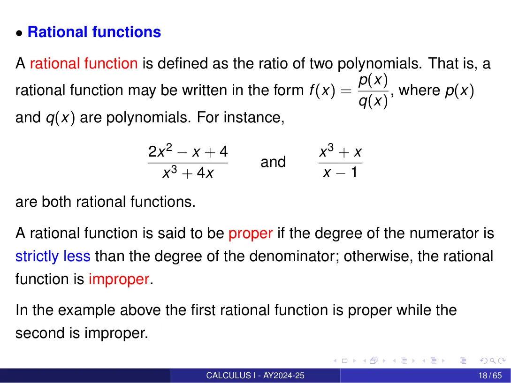
A rational function is a ratio of two polynomials, $f(x)=\frac{p(x)}{q(x)}$. It is proper if $\deg p<\deg q$ and improper otherwise. On the slide, $\frac{2x^2-x+4}{x^3+4x}$ is proper and $\frac{x^3+x}{x-1}$ is improper. Partial fractions apply directly only to proper ones.
Hàm hữu tỉ là thương của hai đa thức, $f(x)=\frac{p(x)}{q(x)}$. Nó thực sự (proper) nếu $\deg p<\deg q$ và không thực sự (improper) trong trường hợp ngược lại. Trên slide, $\frac{2x^2-x+4}{x^3+4x}$ thực sự còn $\frac{x^3+x}{x-1}$ không thực sự. Phân thức đơn giản chỉ áp dụng trực tiếp cho hàm thực sự.
Do the long division for the improper function $\dfrac{x^3+x}{x-1}$ of the slide.
Thực hiện phép chia đa thức cho hàm không thực sự $\dfrac{x^3+x}{x-1}$ của slide.
Answer and solution · Đáp án và lời giải
Answer · Đáp án: $x^2+x+2+\dfrac2{x-1}$
$(x-1)(x^2+x+2)=x^3+x-2$, so $x^3+x=(x-1)(x^2+x+2)+2$ and dividing by $x-1$ gives $x^2+x+2+\frac2{x-1}$ (a polynomial plus a proper fraction).
$(x-1)(x^2+x+2)=x^3+x-2$, nên $x^3+x=(x-1)(x^2+x+2)+2$ và chia cho $x-1$ được $x^2+x+2+\frac2{x-1}$ (đa thức cộng một phân thức thực sự).
The partial fractions theorem · Định lý phân thức đơn giản
★★★ Core · Cốt lõi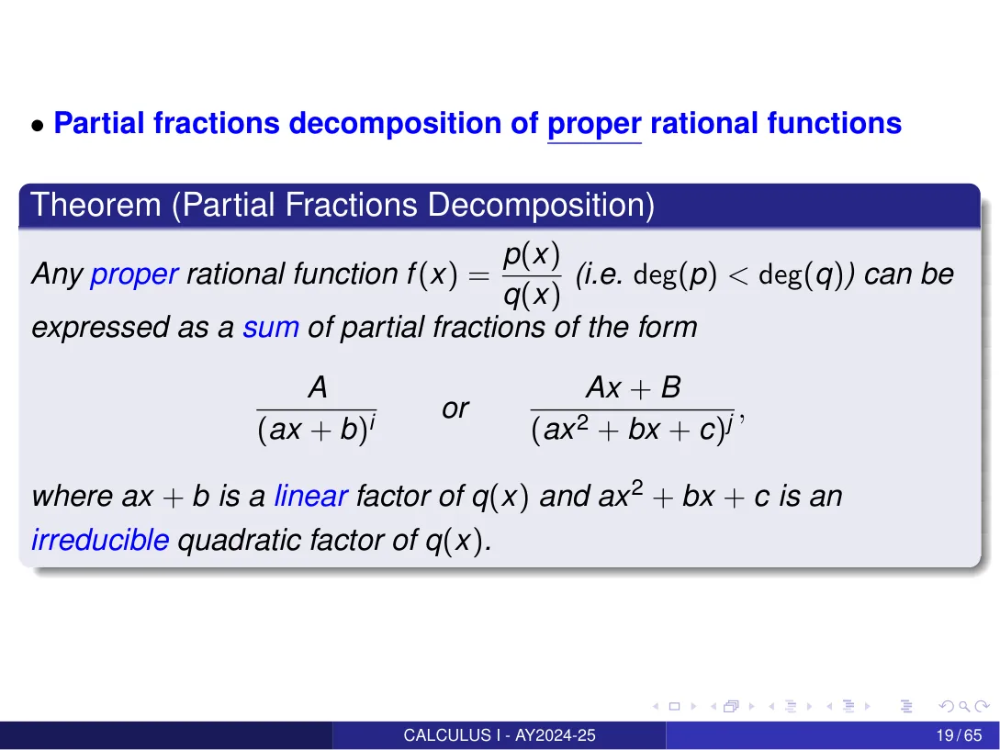
Theorem. Every proper rational function $\frac{p(x)}{q(x)}$ is a sum of partial fractions of two kinds: $\frac A{(ax+b)^i}$ for each linear factor $ax+b$ of $q$, and $\frac{Ax+B}{(ax^2+bx+c)^j}$ for each irreducible quadratic factor. The numerator over an irreducible quadratic must be linear ($Ax+B$), not a constant.
Định lý. Mọi hàm hữu tỉ thực sự $\frac{p(x)}{q(x)}$ là tổng các phân thức đơn giản thuộc hai loại: $\frac A{(ax+b)^i}$ cho mỗi nhân tử bậc nhất $ax+b$ của $q$, và $\frac{Ax+B}{(ax^2+bx+c)^j}$ cho mỗi nhân tử bậc hai bất khả quy. Tử số trên tam thức bất khả quy phải là bậc nhất ($Ax+B$), không phải hằng số.
Repeated factors · Nhân tử lặp
★★★ Core · Cốt lõi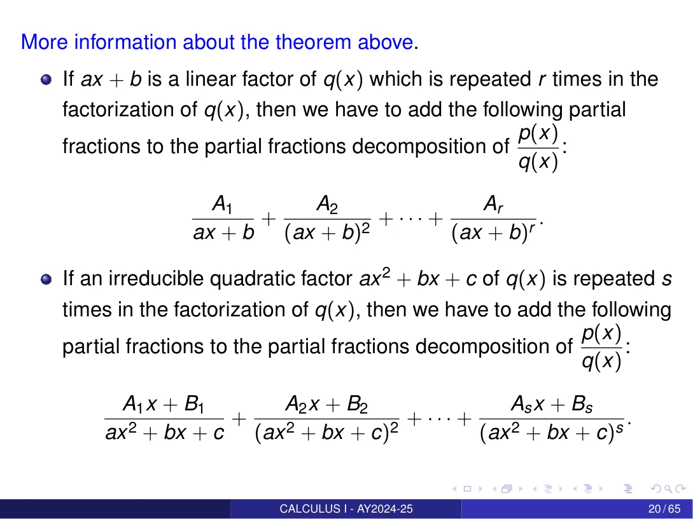
If a factor is repeated, you need one partial fraction for every power up to the multiplicity. A linear factor $ax+b$ repeated $r$ times contributes $\frac{A_1}{ax+b}+\frac{A_2}{(ax+b)^2}+\cdots+\frac{A_r}{(ax+b)^r}$. An irreducible quadratic repeated $s$ times contributes $\frac{A_1x+B_1}{ax^2+bx+c}+\cdots+\frac{A_sx+B_s}{(ax^2+bx+c)^s}$. Count the unknowns: it always equals the degree of $q$.
Nếu một nhân tử lặp, cần một phân thức cho mỗi lũy thừa đến bội của nó. Nhân tử bậc nhất $ax+b$ lặp $r$ lần cho $\frac{A_1}{ax+b}+\frac{A_2}{(ax+b)^2}+\cdots+\frac{A_r}{(ax+b)^r}$. Tam thức bất khả quy lặp $s$ lần cho $\frac{A_1x+B_1}{ax^2+bx+c}+\cdots+\frac{A_sx+B_s}{(ax^2+bx+c)^s}$. Đếm số ẩn: luôn bằng bậc của $q$.
Write the form of the decomposition of $\dfrac{3x+5}{(x-1)^2(x^2+4)^2}$ (do not solve) and check that the six constants are determined uniquely.
Viết dạng phân tích của $\dfrac{3x+5}{(x-1)^2(x^2+4)^2}$ (không giải) và kiểm tra rằng sáu hằng số được xác định duy nhất.
Answer and solution · Đáp án và lời giải
Answer · Đáp án: $\dfrac a{x-1}+\dfrac b{(x-1)^2}+\dfrac{cx+d}{x^2+4}+\dfrac{kx+m}{(x^2+4)^2}$
The denominator has degree $2+4=6$, hence six unknowns: $a,b$ for the double linear factor and $c,d,k,m$ for the double irreducible quadratic. Clearing denominators gives a degree-5 polynomial identity, i.e. six linear equations in six unknowns, which has exactly one solution.
Mẫu số có bậc $2+4=6$, do đó có sáu ẩn: $a,b$ cho nhân tử bậc nhất bội hai và $c,d,k,m$ cho tam thức bất khả quy bội hai. Quy đồng mẫu được đồng nhất thức đa thức bậc 5, tức sáu phương trình tuyến tính sáu ẩn, có đúng một nghiệm.
The method, steps 1 and 2 · Phương pháp, bước 1 và 2
★★★ Core · Cốt lõi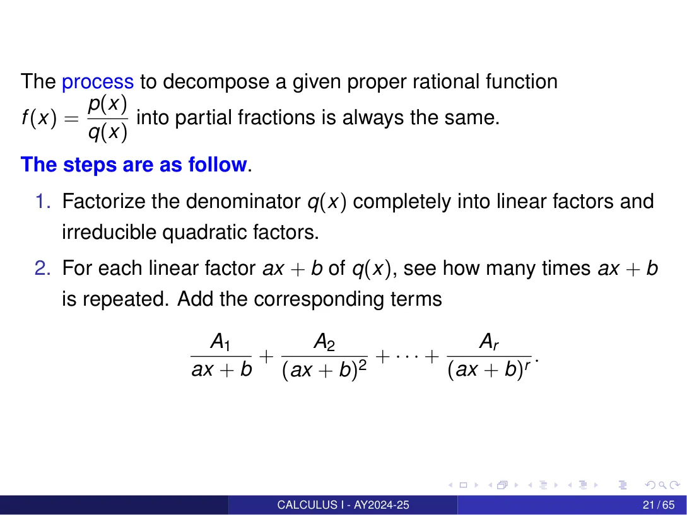
The procedure never changes. Step 1: factorise the denominator $q(x)$ completely into linear and irreducible quadratic factors. Step 2: for each linear factor $ax+b$, check how many times it is repeated and write the terms $\frac{A_1}{ax+b}+\cdots+\frac{A_r}{(ax+b)^r}$.
Quy trình không thay đổi. Bước 1: phân tích hoàn toàn mẫu số $q(x)$ thành nhân tử bậc nhất và bậc hai bất khả quy. Bước 2: với mỗi nhân tử bậc nhất $ax+b$, xem nó lặp mấy lần và viết các số hạng $\frac{A_1}{ax+b}+\cdots+\frac{A_r}{(ax+b)^r}$.
The method, steps 3 to 5 · Phương pháp, bước 3 đến 5
★★★ Core · Cốt lõi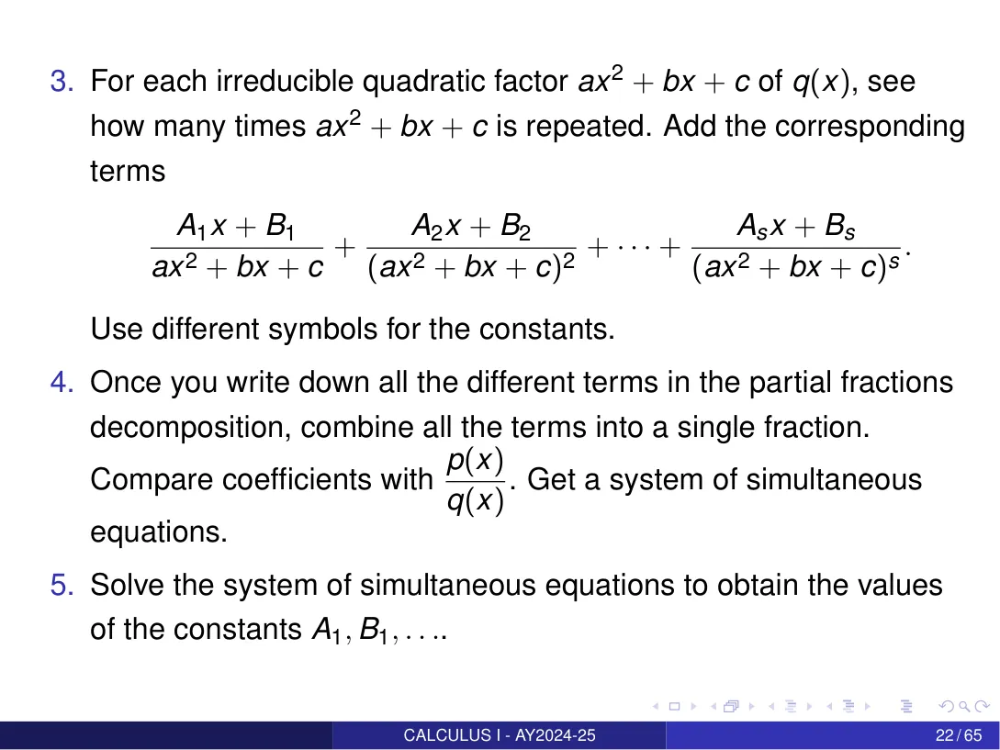
Step 3: for each irreducible quadratic factor write the terms $\frac{A_1x+B_1}{ax^2+bx+c}+\cdots$, using different letters for every constant. Step 4: combine everything over the common denominator and compare the coefficients with the numerator $p(x)$: this gives a system of simultaneous equations. Step 5: solve it for the constants. (A quicker alternative to comparing coefficients: substitute convenient values of $x$, such as the roots of the linear factors.)
Bước 3: với mỗi tam thức bất khả quy viết các số hạng $\frac{A_1x+B_1}{ax^2+bx+c}+\cdots$, dùng chữ khác nhau cho mọi hằng số. Bước 4: quy đồng tất cả về mẫu chung và so sánh hệ số với tử số $p(x)$: được một hệ phương trình. Bước 5: giải hệ để tìm các hằng số. (Cách nhanh hơn so sánh hệ số: thay các giá trị $x$ thuận tiện, như nghiệm của các nhân tử bậc nhất.)
Decompose $\dfrac{5x-3}{(x-1)(x+3)}$ into partial fractions.
Phân tích $\dfrac{5x-3}{(x-1)(x+3)}$ thành phân thức đơn giản.
Answer and solution · Đáp án và lời giải
Answer · Đáp án: $\dfrac{1/2}{x-1}+\dfrac{9/2}{x+3}$
$\frac A{x-1}+\frac B{x+3}$, so $5x-3=A(x+3)+B(x-1)$. At $x=1$: $2=4A$, $A=\frac12$. At $x=-3$: $-18=-4B$, $B=\frac92$. Check: $\frac12(x+3)+\frac92(x-1)=5x-3$.
$\frac A{x-1}+\frac B{x+3}$, nên $5x-3=A(x+3)+B(x-1)$. Tại $x=1$: $2=4A$, $A=\frac12$. Tại $x=-3$: $-18=-4B$, $B=\frac92$. Kiểm tra: $\frac12(x+3)+\frac92(x-1)=5x-3$.
Example: $\frac{2x^2-x+4}{x^3+4x}$, setting up · Ví dụ: $\frac{2x^2-x+4}{x^3+4x}$, lập dạng phân tích
★★★ Core · Cốt lõi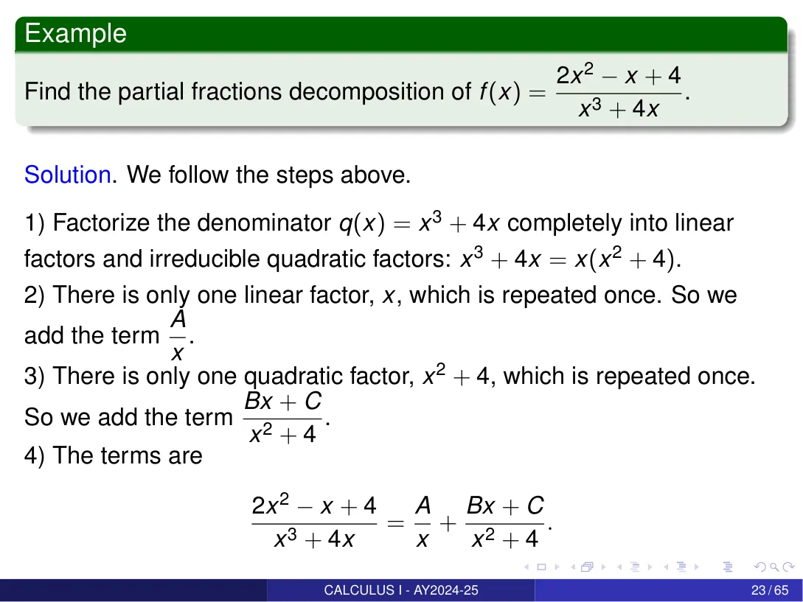
Step 1: $x^3+4x=x(x^2+4)$, a linear factor and an irreducible quadratic ($b^2-4ac=-16<0$). Steps 2 and 3: one term for each, $\frac Ax$ and $\frac{Bx+C}{x^2+4}$. Step 4: the identity $\frac{2x^2-x+4}{x^3+4x}=\frac Ax+\frac{Bx+C}{x^2+4}$.
Bước 1: $x^3+4x=x(x^2+4)$, một nhân tử bậc nhất và một tam thức bất khả quy ($b^2-4ac=-16<0$). Bước 2 và 3: mỗi nhân tử một số hạng, $\frac Ax$ và $\frac{Bx+C}{x^2+4}$. Bước 4: đồng nhất thức $\frac{2x^2-x+4}{x^3+4x}=\frac Ax+\frac{Bx+C}{x^2+4}$.
Example: solving for $A$, $B$, $C$ · Ví dụ: giải tìm $A$, $B$, $C$
★★★ Core · Cốt lõi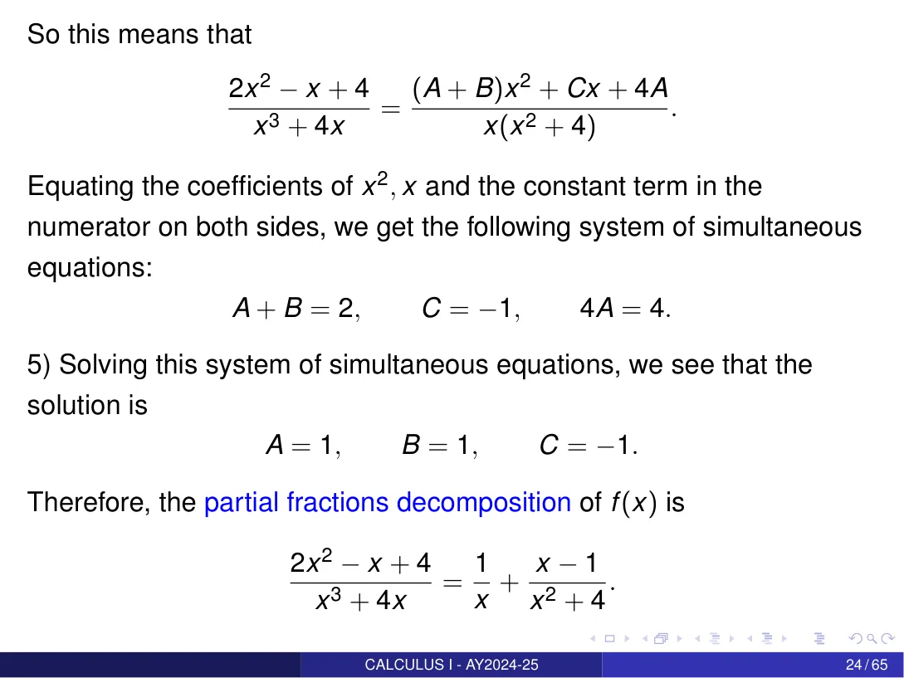
Combine over $x(x^2+4)$: the numerator is $A(x^2+4)+(Bx+C)x=(A+B)x^2+Cx+4A$. Equate with $2x^2-x+4$: $A+B=2$, $C=-1$, $4A=4$. So $A=1$, $B=1$, $C=-1$ and
$$\frac{2x^2-x+4}{x^3+4x}=\frac1x+\frac{x-1}{x^2+4}.$$
Check by recombining: $(x^2+4)+(x-1)x=2x^2-x+4$. ✓
Quy đồng trên $x(x^2+4)$: tử số là $A(x^2+4)+(Bx+C)x=(A+B)x^2+Cx+4A$. Cân bằng với $2x^2-x+4$: $A+B=2$, $C=-1$, $4A=4$. Vậy $A=1$, $B=1$, $C=-1$ và
$$\frac{2x^2-x+4}{x^3+4x}=\frac1x+\frac{x-1}{x^2+4}.$$
Kiểm tra bằng cách quy đồng lại: $(x^2+4)+(x-1)x=2x^2-x+4$. ✓
Decompose $\dfrac{3x^2+2x+5}{x(x^2+1)}$.
Phân tích $\dfrac{3x^2+2x+5}{x(x^2+1)}$.
Answer and solution · Đáp án và lời giải
Answer · Đáp án: $\dfrac5x+\dfrac{2-2x}{x^2+1}$
$3x^2+2x+5=A(x^2+1)+(Bx+C)x$. Constant term: $A=5$. Coefficient of $x$: $C=2$. Coefficient of $x^2$: $A+B=3$, so $B=-2$. Hence $\frac5x+\frac{-2x+2}{x^2+1}$.
$3x^2+2x+5=A(x^2+1)+(Bx+C)x$. Hằng số: $A=5$. Hệ số của $x$: $C=2$. Hệ số của $x^2$: $A+B=3$ nên $B=-2$. Do đó $\frac5x+\frac{-2x+2}{x^2+1}$.
Why partial fractions · Vì sao dùng phân thức đơn giản
★★ Important · Quan trọng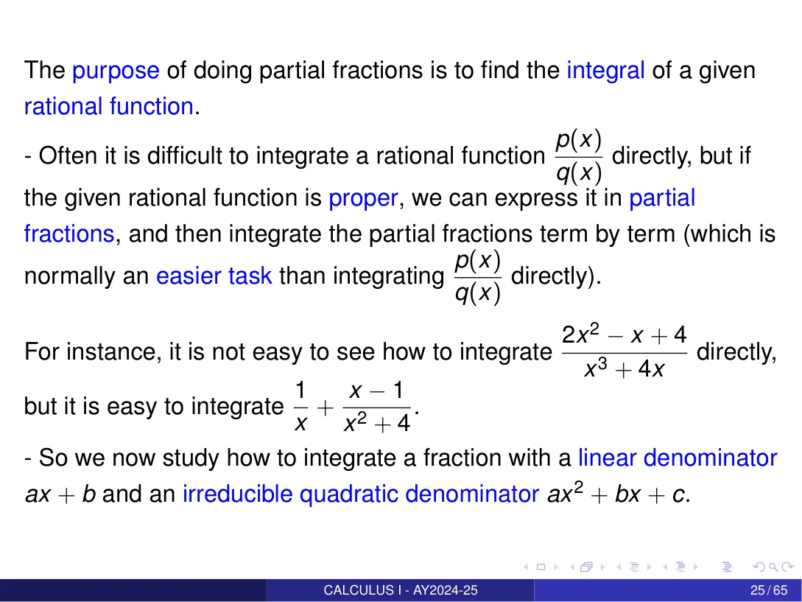
A proper rational function is usually hard to integrate directly, but its partial fractions are easy. For instance $\frac{2x^2-x+4}{x^3+4x}$ gives no hint, while $\frac1x+\frac{x-1}{x^2+4}$ integrates term by term. So the remaining question is how to integrate the two kinds of partial fractions: a linear denominator, and an irreducible quadratic denominator.
Một hàm hữu tỉ thực sự thường khó lấy tích phân trực tiếp, nhưng các phân thức đơn giản của nó thì dễ. Ví dụ $\frac{2x^2-x+4}{x^3+4x}$ không gợi ý gì, còn $\frac1x+\frac{x-1}{x^2+4}$ thì lấy tích phân từng số hạng được. Vậy còn lại câu hỏi: tích phân hai loại phân thức đơn giản, mẫu bậc nhất và mẫu bậc hai bất khả quy.
The two basic formulas · Hai công thức cơ bản
★★★ Core · Cốt lõi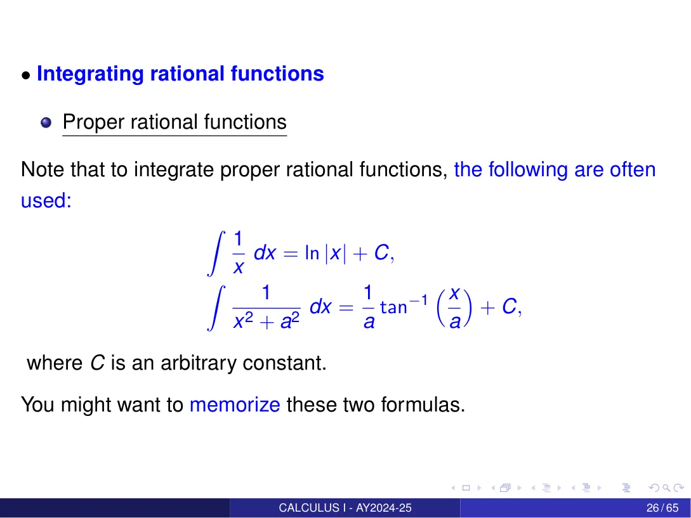
To integrate proper rational functions you mostly need two formulas: $\int\frac{dx}x=\ln|x|+C$ and $\int\frac{dx}{x^2+a^2}=\frac1a\tan^{-1}\frac xa+C$. The slide suggests memorising them. For $\frac{Bx+C}{x^2+a^2}$ split the numerator: the $Bx$ part gives $\frac B2\ln(x^2+a^2)$ ($u=x^2+a^2$) and the $C$ part gives the arctangent. If the quadratic is not of the form $x^2+a^2$, complete the square first.
Để lấy tích phân hàm hữu tỉ thực sự, hầu hết cần hai công thức: $\int\frac{dx}x=\ln|x|+C$ và $\int\frac{dx}{x^2+a^2}=\frac1a\tan^{-1}\frac xa+C$. Slide khuyên học thuộc chúng. Với $\frac{Bx+C}{x^2+a^2}$ hãy tách tử số: phần $Bx$ cho $\frac B2\ln(x^2+a^2)$ ($u=x^2+a^2$) và phần $C$ cho arctan. Nếu tam thức không có dạng $x^2+a^2$, hãy hoàn thành bình phương trước.
Evaluate $\displaystyle\int_0^3\frac{dx}{x^2+9}$ and $\displaystyle\int_{-1}^{1}\frac{dx}{x^2+2x+5}$ (complete the square).
Tính $\displaystyle\int_0^3\frac{dx}{x^2+9}$ và $\displaystyle\int_{-1}^{1}\frac{dx}{x^2+2x+5}$ (hoàn thành bình phương).
Answer and solution · Đáp án và lời giải
Answer · Đáp án: $\dfrac\pi{12}$ and $\dfrac\pi8$
First: $\frac13\tan^{-1}\frac x3\Big|_0^3=\frac13\cdot\frac\pi4=\frac\pi{12}$. Second: $x^2+2x+5=(x+1)^2+4$, so $\frac12\tan^{-1}\frac{x+1}2\Big|_{-1}^{1}=\frac12\left(\frac\pi4-0\right)=\frac\pi8$.
Bài đầu: $\frac13\tan^{-1}\frac x3\Big|_0^3=\frac13\cdot\frac\pi4=\frac\pi{12}$. Bài sau: $x^2+2x+5=(x+1)^2+4$, nên $\frac12\tan^{-1}\frac{x+1}2\Big|_{-1}^{1}=\frac12\left(\frac\pi4-0\right)=\frac\pi8$.
Example: $\int_1^2\frac{dx}{x^5+2x^3+x}$ · Ví dụ: $\int_1^2\frac{dx}{x^5+2x^3+x}$
★★★ Core · Cốt lõi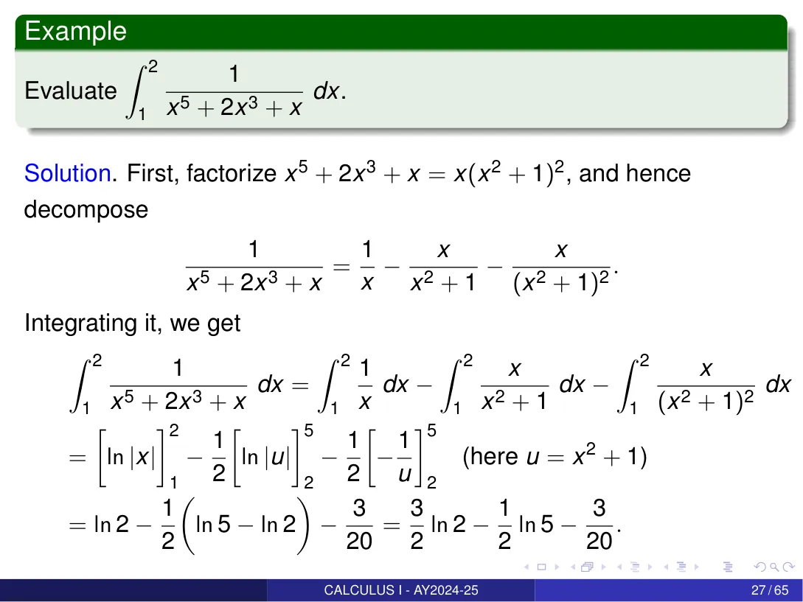
Factorise $x^5+2x^3+x=x(x^2+1)^2$: a linear factor and a repeated irreducible quadratic, so the form is $\frac Ax+\frac{Bx+C}{x^2+1}+\frac{Dx+E}{(x^2+1)^2}$. Solving gives
$$\frac1{x(x^2+1)^2}=\frac1x-\frac x{x^2+1}-\frac x{(x^2+1)^2}.$$
Integrate term by term on $[1,2]$: $\int\frac{dx}x=\ln2$; $\int\frac x{x^2+1}dx=\frac12\ln\frac52$ ($u=x^2+1$); $\int\frac x{(x^2+1)^2}dx=\left[-\frac1{2(x^2+1)}\right]_1^2=\frac3{20}$. Hence the integral is $\ln2-\frac12\ln\frac52-\frac3{20}=\frac32\ln2-\frac12\ln5-\frac3{20}\approx0.085$.
Phân tích $x^5+2x^3+x=x(x^2+1)^2$: một nhân tử bậc nhất và một tam thức bất khả quy lặp, nên dạng là $\frac Ax+\frac{Bx+C}{x^2+1}+\frac{Dx+E}{(x^2+1)^2}$. Giải ra
$$\frac1{x(x^2+1)^2}=\frac1x-\frac x{x^2+1}-\frac x{(x^2+1)^2}.$$
Lấy tích phân từng số hạng trên $[1,2]$: $\int\frac{dx}x=\ln2$; $\int\frac x{x^2+1}dx=\frac12\ln\frac52$ ($u=x^2+1$); $\int\frac x{(x^2+1)^2}dx=\left[-\frac1{2(x^2+1)}\right]_1^2=\frac3{20}$. Vậy tích phân bằng $\ln2-\frac12\ln\frac52-\frac3{20}=\frac32\ln2-\frac12\ln5-\frac3{20}\approx0.085$.
Evaluate $\displaystyle\int_0^1\frac{x+3}{x^2+3x+2}\,dx$ and $\displaystyle\int_1^2\frac{2x^2-x+4}{x^3+4x}\,dx$ (the example of slides 23–24).
Tính $\displaystyle\int_0^1\frac{x+3}{x^2+3x+2}\,dx$ và $\displaystyle\int_1^2\frac{2x^2-x+4}{x^3+4x}\,dx$ (ví dụ ở slide 23–24).
Answer and solution · Đáp án và lời giải
Answer · Đáp án: $3\ln2-\ln3$ and $\dfrac52\ln2-\dfrac12\ln5-\dfrac\pi8+\dfrac12\tan^{-1}\dfrac12$
First: $\frac{x+3}{(x+1)(x+2)}=\frac2{x+1}-\frac1{x+2}$, so $[2\ln(x+1)-\ln(x+2)]_0^1=2\ln2-\ln3+\ln2=3\ln2-\ln3\approx0.981$. Second: use $\frac1x+\frac{x-1}{x^2+4}$: $\ln2+\frac12\ln\frac85-\frac12\left(\tan^{-1}1-\tan^{-1}\frac12\right)=\frac52\ln2-\frac12\ln5-\frac\pi8+\frac12\tan^{-1}\frac12\approx0.767$.
Bài đầu: $\frac{x+3}{(x+1)(x+2)}=\frac2{x+1}-\frac1{x+2}$, nên $[2\ln(x+1)-\ln(x+2)]_0^1=2\ln2-\ln3+\ln2=3\ln2-\ln3\approx0.981$. Bài sau: dùng $\frac1x+\frac{x-1}{x^2+4}$: $\ln2+\frac12\ln\frac85-\frac12\left(\tan^{-1}1-\tan^{-1}\frac12\right)=\frac52\ln2-\frac12\ln5-\frac\pi8+\frac12\tan^{-1}\frac12\approx0.767$.
Improper rational functions: divide first · Hàm hữu tỉ không thực sự: chia trước
★★★ Core · Cốt lõi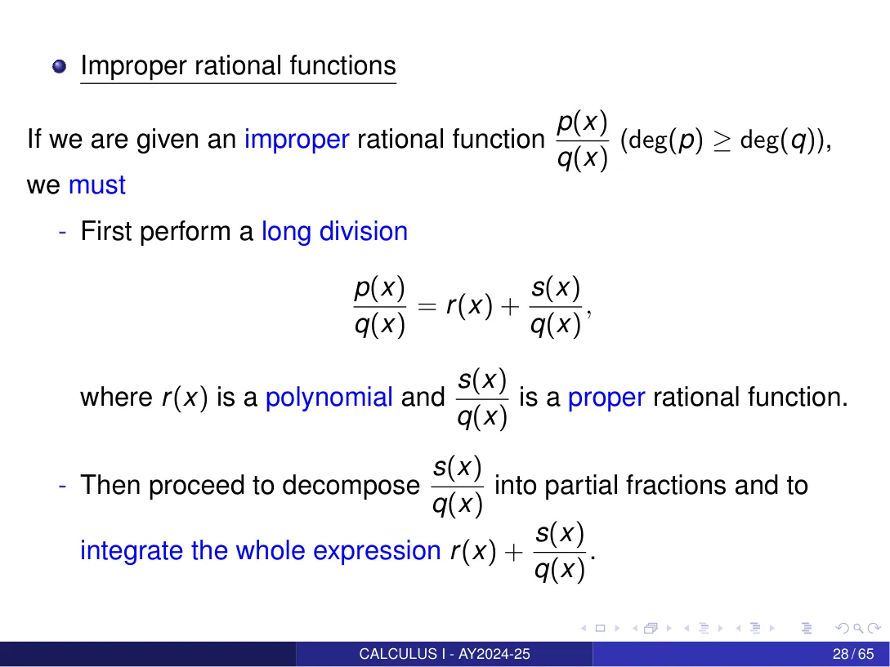
If $\frac{p(x)}{q(x)}$ is improper ($\deg p\ge\deg q$), first perform a long division: $\frac{p(x)}{q(x)}=r(x)+\frac{s(x)}{q(x)}$, where $r$ is a polynomial and $\frac sq$ is proper. Then decompose $\frac sq$ into partial fractions and integrate $r(x)+\frac{s(x)}{q(x)}$. Forgetting the division is a classic error: the theorem of slide 19 applies only to proper functions.
Nếu $\frac{p(x)}{q(x)}$ không thực sự ($\deg p\ge\deg q$), trước hết thực hiện phép chia đa thức: $\frac{p(x)}{q(x)}=r(x)+\frac{s(x)}{q(x)}$, trong đó $r$ là đa thức và $\frac sq$ thực sự. Sau đó tách $\frac sq$ thành phân thức đơn giản và lấy tích phân $r(x)+\frac{s(x)}{q(x)}$. Quên phép chia là lỗi kinh điển: định lý ở slide 19 chỉ áp dụng cho hàm thực sự.
Evaluate $\displaystyle\int_2^3\frac{x^2+1}{x-1}\,dx$.
Tính $\displaystyle\int_2^3\frac{x^2+1}{x-1}\,dx$.
Answer and solution · Đáp án và lời giải
Answer · Đáp án: $\dfrac72+2\ln2$
Division: $x^2+1=(x-1)(x+1)+2$, so $\frac{x^2+1}{x-1}=x+1+\frac2{x-1}$. Then $\left[\frac{x^2}2+x+2\ln|x-1|\right]_2^3=\left(\frac92+3+2\ln2\right)-(2+2+0)=\frac72+2\ln2\approx4.886$.
Phép chia: $x^2+1=(x-1)(x+1)+2$, nên $\frac{x^2+1}{x-1}=x+1+\frac2{x-1}$. Khi đó $\left[\frac{x^2}2+x+2\ln|x-1|\right]_2^3=\left(\frac92+3+2\ln2\right)-(2+2+0)=\frac72+2\ln2\approx4.886$.
Outline: improper integrals · Dàn bài: tích phân suy rộng
★ Context · Bổ trợ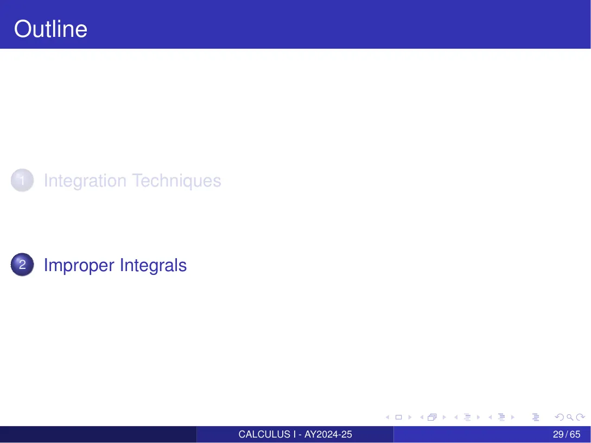
Second part of the chapter: improper integrals.
Phần hai của chương: tích phân suy rộng.
When a definite integral is not defined · Khi nào tích phân xác định chưa được định nghĩa
★★★ Core · Cốt lõi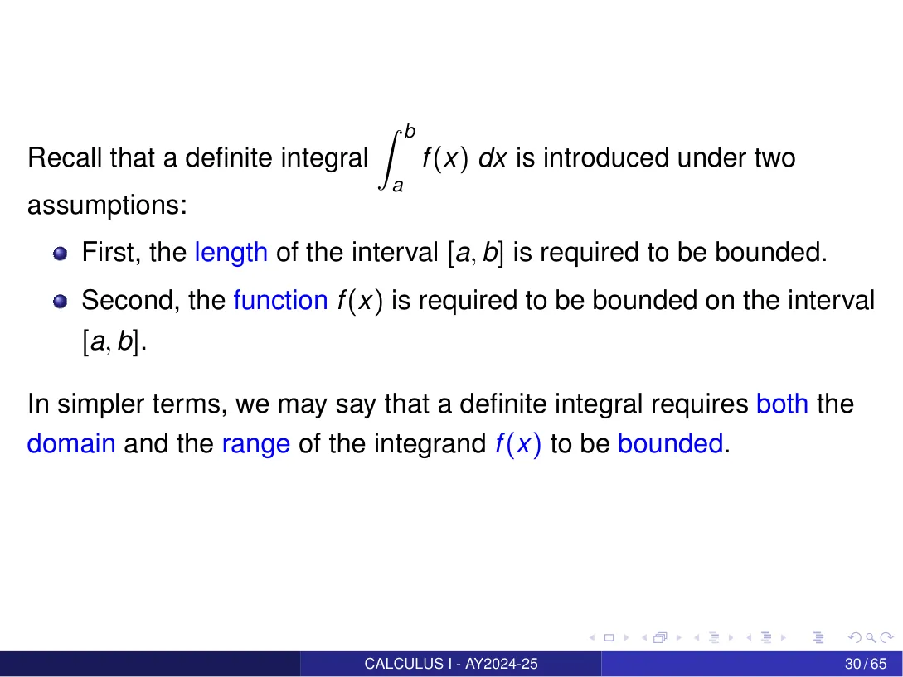
Recall that $\int_a^bf(x)\,dx$ was introduced under two assumptions: the interval $[a,b]$ has bounded length, and $f$ is bounded on it. In short, both the domain and the range of the integrand must be bounded. When one of them fails we need a new definition.
Nhớ rằng $\int_a^bf(x)\,dx$ được đưa ra với hai giả thiết: khoảng $[a,b]$ có độ dài hữu hạn, và $f$ bị chặn trên đó. Nói gọn, cả miền xác định lẫn miền giá trị của hàm dưới dấu tích phân phải bị chặn. Khi một trong hai không thỏa ta cần một định nghĩa mới.
Examples of improper integrals · Ví dụ về tích phân suy rộng
★★★ Core · Cốt lõi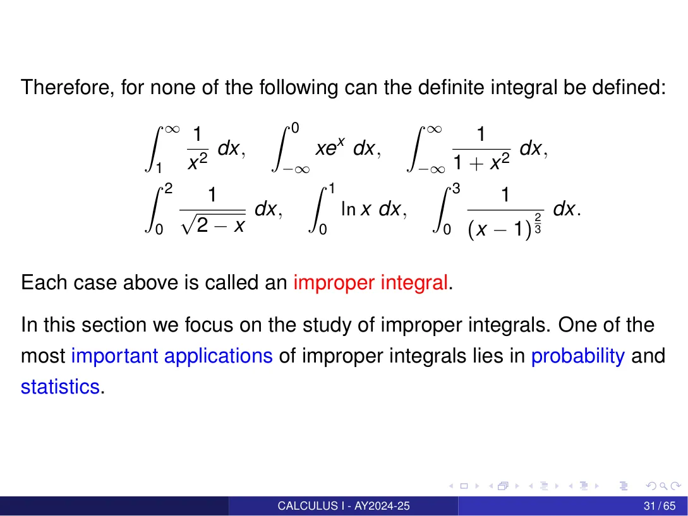
None of these can be a definite integral in the old sense: $\int_1^\infty\frac{dx}{x^2}$, $\int_{-\infty}^0xe^x\,dx$, $\int_{-\infty}^\infty\frac{dx}{1+x^2}$ (infinite interval), and $\int_0^2\frac{dx}{\sqrt{2-x}}$, $\int_0^1\ln x\,dx$, $\int_0^3\frac{dx}{(x-1)^{2/3}}$ (the integrand is unbounded: at $x=2$, at $x=0$, and at $x=1$ inside the interval). Each is called an improper integral. The first three are Type I (this lecture), the last three Type II (next lecture). Improper integrals are essential in probability and statistics, for instance $\int_{-\infty}^\infty$ of a density equals $1$.
Không tích phân nào dưới đây là tích phân xác định theo nghĩa cũ: $\int_1^\infty\frac{dx}{x^2}$, $\int_{-\infty}^0xe^x\,dx$, $\int_{-\infty}^\infty\frac{dx}{1+x^2}$ (khoảng vô hạn), và $\int_0^2\frac{dx}{\sqrt{2-x}}$, $\int_0^1\ln x\,dx$, $\int_0^3\frac{dx}{(x-1)^{2/3}}$ (hàm không bị chặn: tại $x=2$, tại $x=0$ và tại $x=1$ nằm bên trong khoảng). Mỗi tích phân gọi là tích phân suy rộng. Ba tích phân đầu thuộc loại I (bài này), ba tích phân sau thuộc loại II (bài sau). Tích phân suy rộng rất quan trọng trong xác suất và thống kê, ví dụ $\int_{-\infty}^\infty$ của hàm mật độ bằng $1$.
This slide is the map of the whole topic: first decide which of the two failures (infinite interval or unbounded integrand) you are facing.
Slide này là bản đồ của cả chủ đề: trước hết xác định bạn gặp loại nào trong hai loại lỗi (khoảng vô hạn hay hàm không bị chặn).
For each of the six integrals on the slide, say whether it is improper because of an infinite interval or an unbounded integrand, and where the integrand blows up.
Với mỗi tích phân trong sáu tích phân trên slide, cho biết nó suy rộng vì khoảng vô hạn hay vì hàm không bị chặn, và hàm tiến ra vô cực ở đâu.
Answer and solution · Đáp án và lời giải
Answer · Đáp án: three infinite intervals; blow-ups at $x=2$, $x=0$, $x=1$
$\int_1^\infty$, $\int_{-\infty}^0$, $\int_{-\infty}^\infty$: infinite interval. $\frac1{\sqrt{2-x}}\to\infty$ as $x\to2^-$; $\ln x\to-\infty$ as $x\to0^+$; $\frac1{(x-1)^{2/3}}\to\infty$ as $x\to1$, a point inside $(0,3)$, so that integral has to be split at $x=1$.
$\int_1^\infty$, $\int_{-\infty}^0$, $\int_{-\infty}^\infty$: khoảng vô hạn. $\frac1{\sqrt{2-x}}\to\infty$ khi $x\to2^-$; $\ln x\to-\infty$ khi $x\to0^+$; $\frac1{(x-1)^{2/3}}\to\infty$ khi $x\to1$, một điểm nằm trong $(0,3)$ nên tích phân đó phải tách tại $x=1$.
Illustration: $\int_1^\infty\frac{dx}{x^2}$ · Minh họa: $\int_1^\infty\frac{dx}{x^2}$
★★ Important · Quan trọng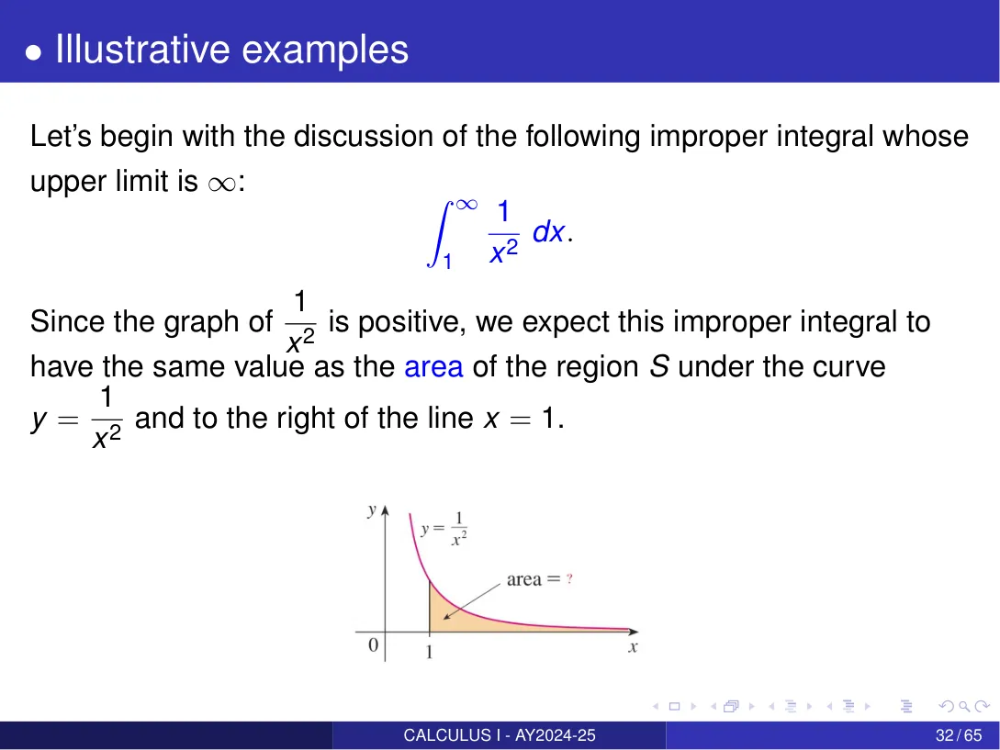
Take $\int_1^\infty\frac1{x^2}\,dx$. The graph of $\frac1{x^2}$ is positive, so we expect the integral to be the area of the region $S$ under $y=\frac1{x^2}$ to the right of $x=1$ (see the figure).
Xét $\int_1^\infty\frac1{x^2}\,dx$. Đồ thị của $\frac1{x^2}$ nằm trên trục hoành nên ta kỳ vọng tích phân là diện tích của miền $S$ dưới $y=\frac1{x^2}$ ở bên phải $x=1$ (xem hình).
Can an unbounded region have finite area? · Miền vô hạn có thể có diện tích hữu hạn không?
★★ Important · Quan trọng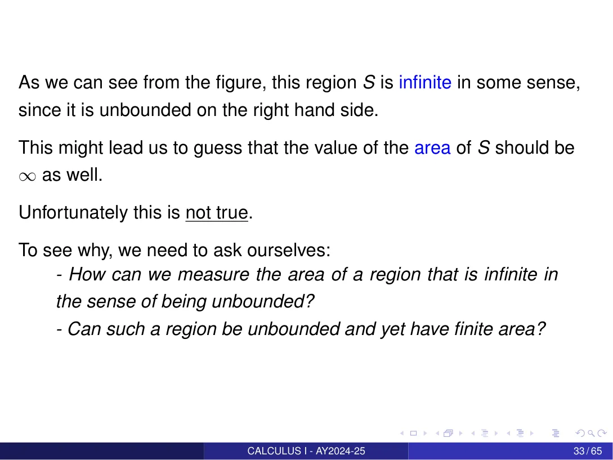
The region $S$ is infinite in the sense of being unbounded on the right, which suggests that its area is $\infty$. That guess is wrong, and the slide poses the two questions that lead to the right answer: how do we measure the area of an unbounded region, and can such a region have finite area? The answer, yet again, is limits.
Miền $S$ vô hạn theo nghĩa không bị chặn ở bên phải, điều này gợi ý diện tích của nó là $\infty$. Dự đoán đó sai, và slide nêu hai câu hỏi dẫn đến đáp án đúng: đo diện tích của miền không bị chặn thế nào, và miền như vậy có thể có diện tích hữu hạn không? Câu trả lời, một lần nữa, là giới hạn.
The area up to $t$ · Diện tích đến $t$
★★★ Core · Cốt lõi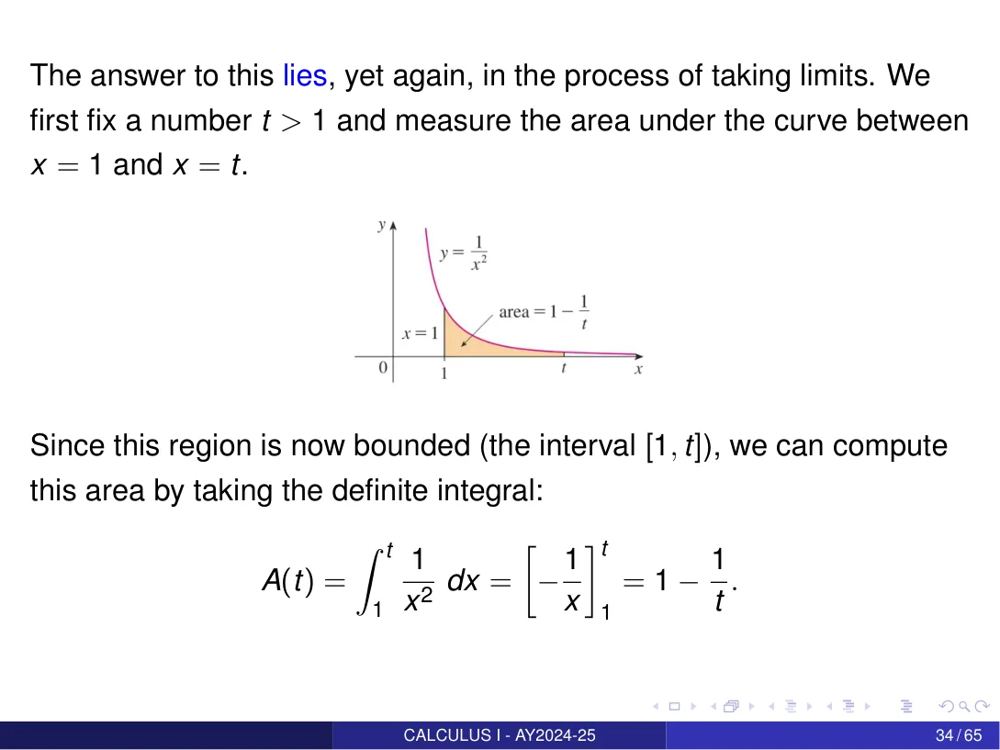
Fix a number $t>1$ and measure the area between $x=1$ and $x=t$. That region is bounded, so its area is an ordinary definite integral:
$$A(t)=\int_1^t\frac{dx}{x^2}=\left[-\frac1x\right]_1^t=1-\frac1t.$$
Cố định số $t>1$ và đo diện tích giữa $x=1$ và $x=t$. Miền này bị chặn nên diện tích là một tích phân xác định thông thường:
$$A(t)=\int_1^t\frac{dx}{x^2}=\left[-\frac1x\right]_1^t=1-\frac1t.$$
The limit defines the improper integral · Giới hạn định nghĩa tích phân suy rộng
★★★ Core · Cốt lõi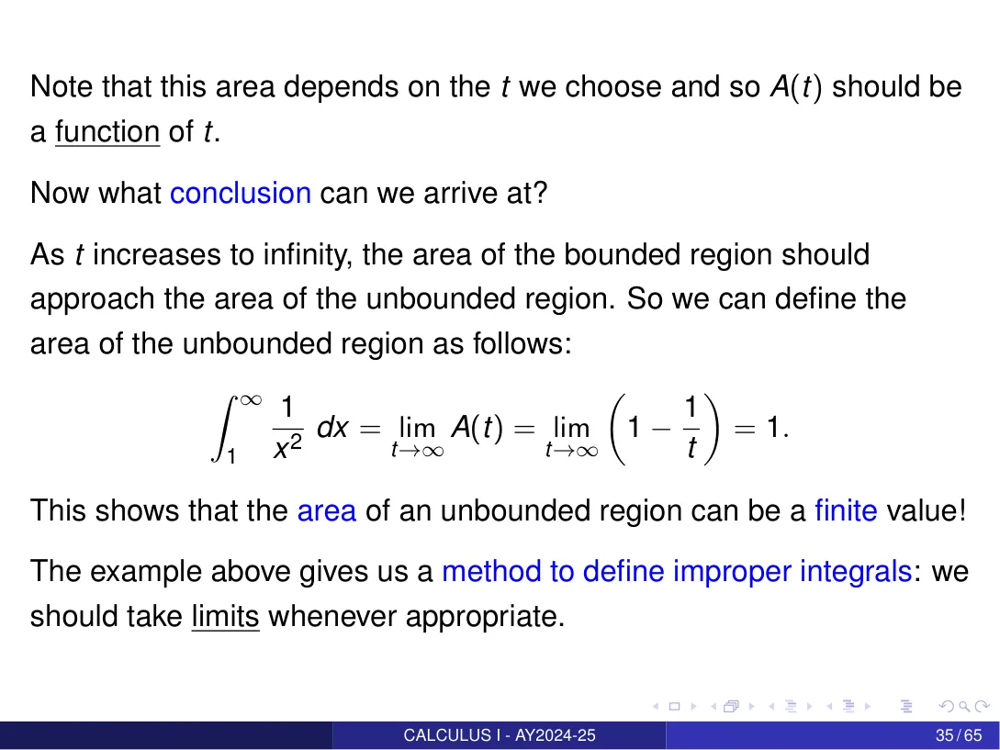
$A(t)$ is a function of $t$. As $t\to\infty$ the bounded region approaches the unbounded one, so we define $\int_1^\infty\frac{dx}{x^2}=\lim_{t\to\infty}A(t)=\lim_{t\to\infty}\left(1-\frac1t\right)=1$. An unbounded region can have a finite area. This gives the general method: take limits whenever appropriate.
$A(t)$ là một hàm của $t$. Khi $t\to\infty$ miền bị chặn tiến đến miền không bị chặn, nên ta định nghĩa $\int_1^\infty\frac{dx}{x^2}=\lim_{t\to\infty}A(t)=\lim_{t\to\infty}\left(1-\frac1t\right)=1$. Một miền không bị chặn có thể có diện tích hữu hạn. Từ đó có phương pháp tổng quát: lấy giới hạn mỗi khi cần.
Compute $A(t)=\int_1^t\frac{dx}{x^3}$, then $\displaystyle\int_1^\infty\frac{dx}{x^3}$.
Tính $A(t)=\int_1^t\frac{dx}{x^3}$, rồi $\displaystyle\int_1^\infty\frac{dx}{x^3}$.
Answer and solution · Đáp án và lời giải
Answer · Đáp án: $A(t)=\dfrac12-\dfrac1{2t^2}$; the integral is $\dfrac12$
$A(t)=\left[-\frac1{2x^2}\right]_1^t=\frac12-\frac1{2t^2}\to\frac12$ as $t\to\infty$.
$A(t)=\left[-\frac1{2x^2}\right]_1^t=\frac12-\frac1{2t^2}\to\frac12$ khi $t\to\infty$.
Another example: $\int_1^\infty\frac{dx}x$ · Ví dụ khác: $\int_1^\infty\frac{dx}x$
★★ Important · Quan trọng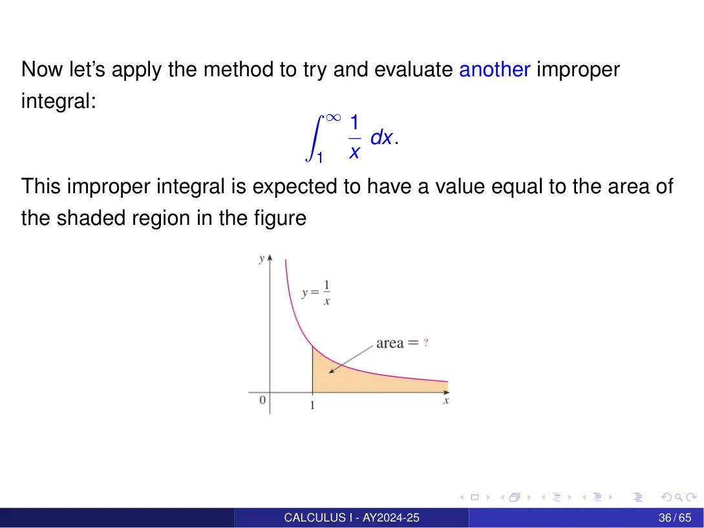
Apply the same method to $\int_1^\infty\frac1x\,dx$, expected to equal the area of the shaded region under $y=\frac1x$ on $[1,\infty)$ (figure on the slide).
Áp dụng cùng phương pháp cho $\int_1^\infty\frac1x\,dx$, kỳ vọng bằng diện tích miền tô màu dưới $y=\frac1x$ trên $[1,\infty)$ (hình trên slide).
The area is infinite · Diện tích là vô hạn
★★★ Core · Cốt lõi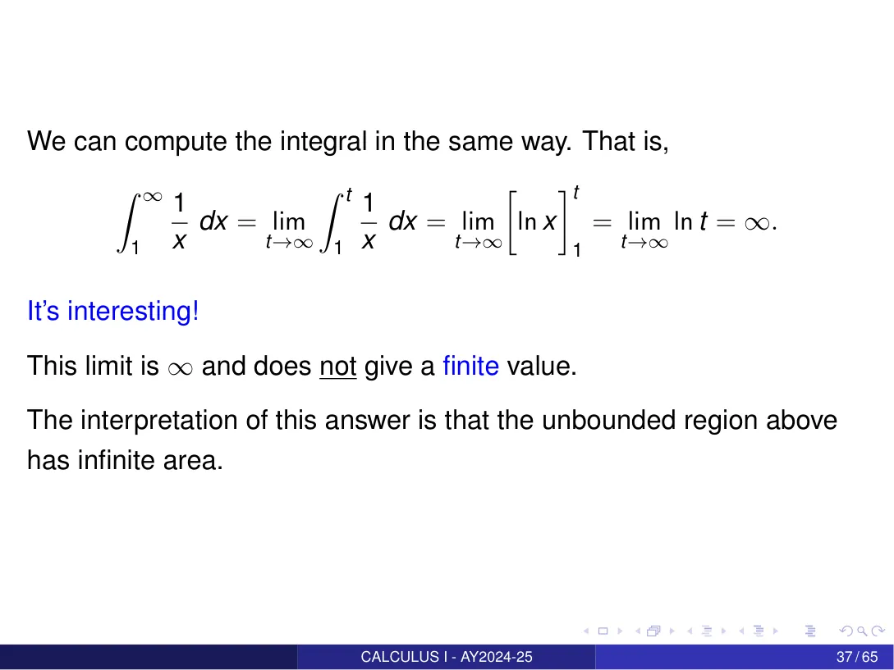
$\int_1^\infty\frac{dx}x=\lim_{t\to\infty}\int_1^t\frac{dx}x=\lim_{t\to\infty}\ln t=\infty$. The limit is $\infty$, not a finite number: the region has infinite area.
$\int_1^\infty\frac{dx}x=\lim_{t\to\infty}\int_1^t\frac{dx}x=\lim_{t\to\infty}\ln t=\infty$. Giới hạn là $\infty$, không phải số hữu hạn: miền có diện tích vô hạn.
Decide whether $\displaystyle\int_1^\infty\frac{dx}{\sqrt x}$ and $\displaystyle\int_2^\infty\frac{dx}{x\ln x}$ converge.
Xác định $\displaystyle\int_1^\infty\frac{dx}{\sqrt x}$ và $\displaystyle\int_2^\infty\frac{dx}{x\ln x}$ có hội tụ không.
Answer and solution · Đáp án và lời giải
Answer · Đáp án: both diverge to $\infty$
$\int_1^t x^{-1/2}dx=2\sqrt t-2\to\infty$. For the second, $u=\ln x$: $\int_2^t\frac{dx}{x\ln x}=\ln\ln t-\ln\ln2\to\infty$ (very slowly).
$\int_1^t x^{-1/2}dx=2\sqrt t-2\to\infty$. Với bài sau, $u=\ln x$: $\int_2^t\frac{dx}{x\ln x}=\ln\ln t-\ln\ln2\to\infty$ (rất chậm).
Comparing $\frac1{x^2}$ and $\frac1x$ · So sánh $\frac1{x^2}$ và $\frac1x$
★★★ Core · Cốt lõi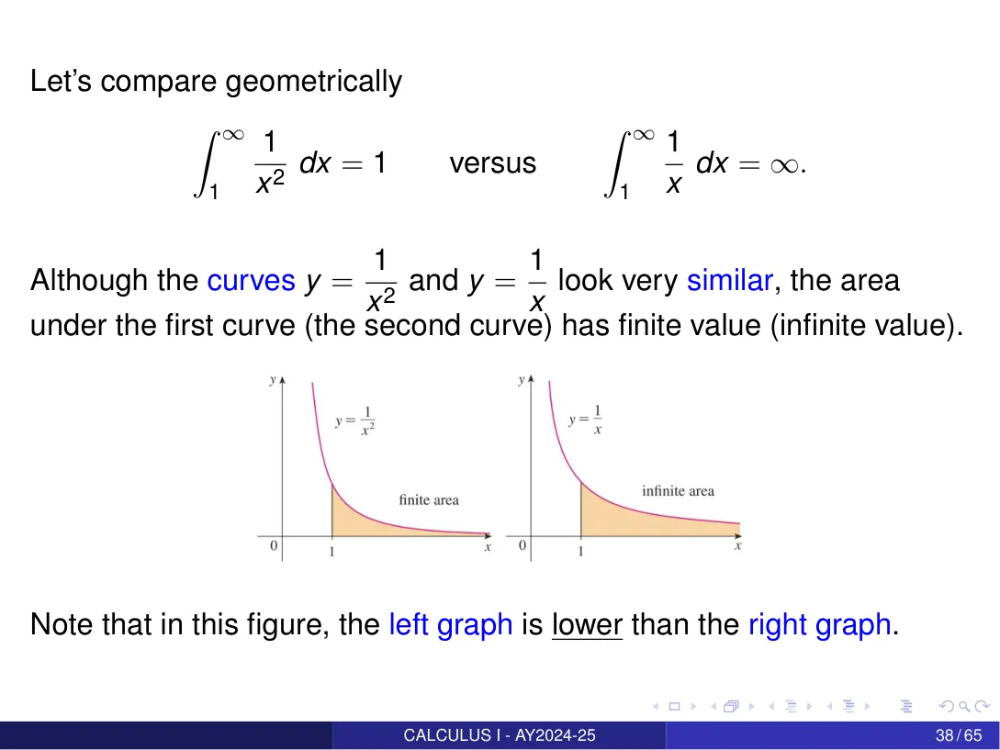
$\int_1^\infty\frac{dx}{x^2}=1$ versus $\int_1^\infty\frac{dx}x=\infty$. The two curves look very similar, yet the first has finite area and the second infinite area. The picture shows the left graph (finite area) lying below the right one: the exponent decides, and the next lecture states this as the $p$-test.
$\int_1^\infty\frac{dx}{x^2}=1$ so với $\int_1^\infty\frac{dx}x=\infty$. Hai đường cong trông rất giống nhau, nhưng đường thứ nhất có diện tích hữu hạn còn đường thứ hai vô hạn. Hình cho thấy đồ thị bên trái (diện tích hữu hạn) nằm dưới đồ thị bên phải: số mũ quyết định, và bài sau phát biểu điều này thành tiêu chuẩn $p$.
Without any theorem, compute $\displaystyle\int_1^\infty x^{-3/2}\,dx$ and $\displaystyle\int_1^\infty x^{-1/2}\,dx$ and compare.
Không dùng định lý nào, tính $\displaystyle\int_1^\infty x^{-3/2}\,dx$ và $\displaystyle\int_1^\infty x^{-1/2}\,dx$ rồi so sánh.
Answer and solution · Đáp án và lời giải
Answer · Đáp án: $2$ and $\infty$ (diverges)
$\int_1^t x^{-3/2}dx=2-\frac2{\sqrt t}\to2$, while $\int_1^t x^{-1/2}dx=2\sqrt t-2\to\infty$: the exponent $-\frac32<-1$ converges, $-\frac12>-1$ diverges.
$\int_1^t x^{-3/2}dx=2-\frac2{\sqrt t}\to2$, còn $\int_1^t x^{-1/2}dx=2\sqrt t-2\to\infty$: số mũ $-\frac32<-1$ hội tụ, $-\frac12>-1$ phân kỳ.
Convergent and divergent · Hội tụ và phân kỳ
★★★ Core · Cốt lõi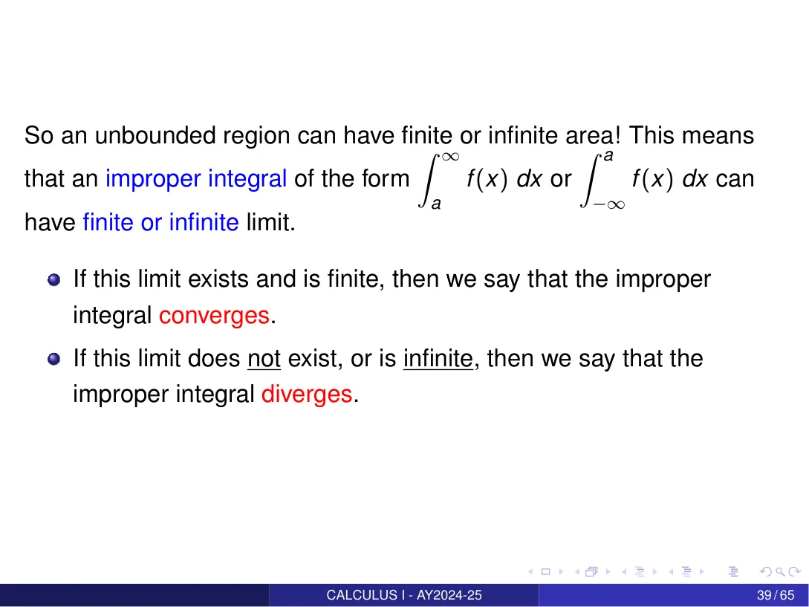
An unbounded region can have finite or infinite area, so an improper integral of the form $\int_a^\infty f$ or $\int_{-\infty}^af$ can have a finite or an infinite limit. If the limit exists and is finite the integral converges; if the limit does not exist, or is infinite, it diverges.
Một miền không bị chặn có thể có diện tích hữu hạn hoặc vô hạn, nên tích phân suy rộng dạng $\int_a^\infty f$ hoặc $\int_{-\infty}^af$ có thể có giới hạn hữu hạn hoặc vô hạn. Nếu giới hạn tồn tại và hữu hạn thì tích phân hội tụ; nếu giới hạn không tồn tại hoặc vô hạn thì nó phân kỳ.
Type I: the definitions (a) and (b) · Loại I: định nghĩa (a) và (b)
★★★ Core · Cốt lõi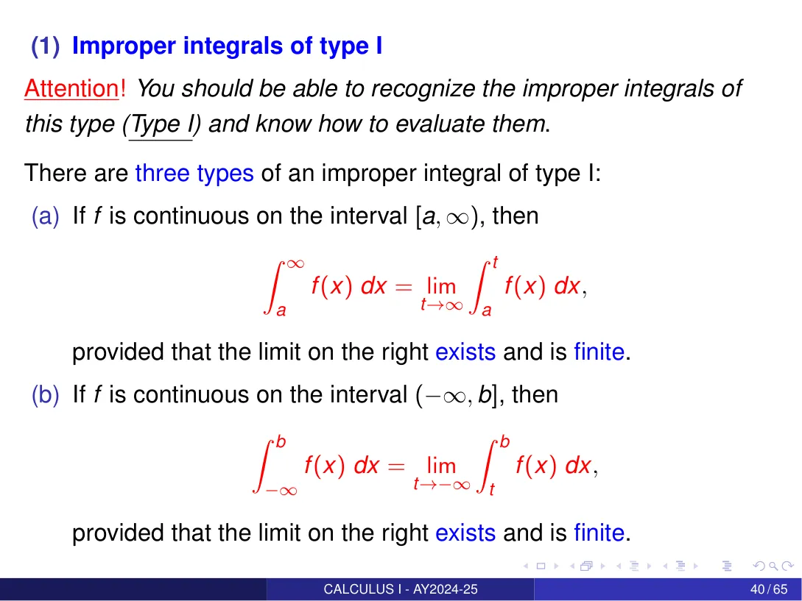
Attention: you must recognise Type I integrals and know how to evaluate them. (a) If $f$ is continuous on $[a,\infty)$: $\int_a^\infty f(x)dx=\lim_{t\to\infty}\int_a^tf(x)dx$. (b) If $f$ is continuous on $(-\infty,b]$: $\int_{-\infty}^bf(x)dx=\lim_{t\to-\infty}\int_t^bf(x)dx$. In both cases the integral is defined only when the limit exists and is finite.
Chú ý: bạn phải nhận ra tích phân loại I và biết cách tính chúng. (a) Nếu $f$ liên tục trên $[a,\infty)$: $\int_a^\infty f(x)dx=\lim_{t\to\infty}\int_a^tf(x)dx$. (b) Nếu $f$ liên tục trên $(-\infty,b]$: $\int_{-\infty}^bf(x)dx=\lim_{t\to-\infty}\int_t^bf(x)dx$. Cả hai trường hợp tích phân chỉ được định nghĩa khi giới hạn tồn tại và hữu hạn.
This slide is quoted in almost every exam: write the limit explicitly, do not skip it.
Slide này gần như có mặt trong mọi đề thi: hãy viết giới hạn rõ ràng, đừng bỏ qua.
Evaluate $\displaystyle\int_0^\infty e^{-2x}dx$, $\displaystyle\int_{-\infty}^0e^{3x}dx$ and $\displaystyle\int_{-\infty}^0xe^x\,dx$ (the last one by parts).
Tính $\displaystyle\int_0^\infty e^{-2x}dx$, $\displaystyle\int_{-\infty}^0e^{3x}dx$ và $\displaystyle\int_{-\infty}^0xe^x\,dx$ (bài cuối bằng từng phần).
Answer and solution · Đáp án và lời giải
Answer · Đáp án: $\dfrac12$, $\dfrac13$ and $-1$
First: $\lim_{t\to\infty}\left[-\frac{e^{-2x}}2\right]_0^t=\frac12$. Second: $\lim_{t\to-\infty}\left[\frac{e^{3x}}3\right]_t^0=\frac13$. Third: $\int xe^xdx=xe^x-e^x$, so $[xe^x-e^x]_t^0=-1-(te^t-e^t)\to-1$ because $te^t\to0$ and $e^t\to0$ as $t\to-\infty$.
Bài 1: $\lim_{t\to\infty}\left[-\frac{e^{-2x}}2\right]_0^t=\frac12$. Bài 2: $\lim_{t\to-\infty}\left[\frac{e^{3x}}3\right]_t^0=\frac13$. Bài 3: $\int xe^xdx=xe^x-e^x$, nên $[xe^x-e^x]_t^0=-1-(te^t-e^t)\to-1$ vì $te^t\to0$ và $e^t\to0$ khi $t\to-\infty$.
Type I: the definition (c) · Loại I: định nghĩa (c)
★★★ Core · Cốt lõi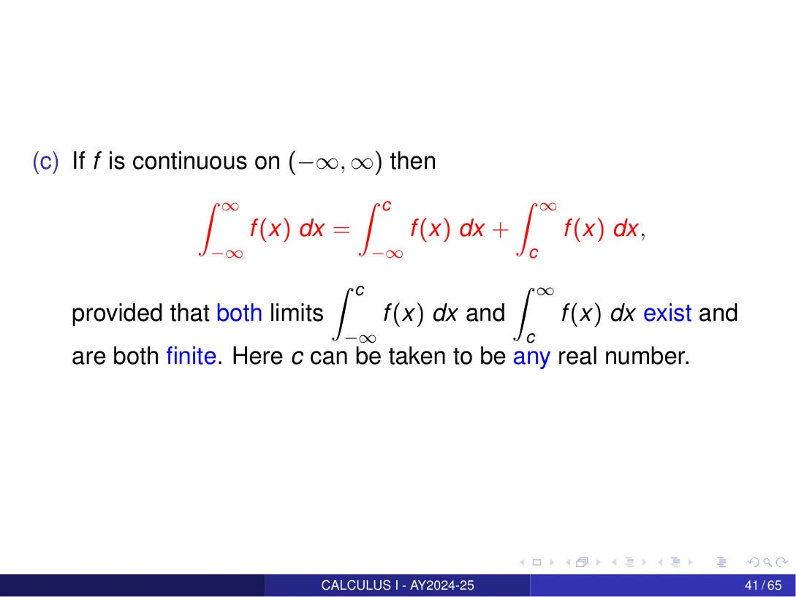
(c) If $f$ is continuous on $(-\infty,\infty)$: $\int_{-\infty}^\infty f=\int_{-\infty}^cf+\int_c^\infty f$ for any real $c$, provided both improper integrals on the right exist and are finite. Choose $c$ for convenience, usually $0$.
(c) Nếu $f$ liên tục trên $(-\infty,\infty)$: $\int_{-\infty}^\infty f=\int_{-\infty}^cf+\int_c^\infty f$ với mọi số thực $c$, với điều kiện cả hai tích phân suy rộng bên phải tồn tại và hữu hạn. Chọn $c$ cho thuận tiện, thường là $0$.
Evaluate $\displaystyle\int_{-\infty}^\infty\frac{dx}{1+x^2}$ and $\displaystyle\int_{-\infty}^\infty e^{-|x|}dx$.
Tính $\displaystyle\int_{-\infty}^\infty\frac{dx}{1+x^2}$ và $\displaystyle\int_{-\infty}^\infty e^{-|x|}dx$.
Answer and solution · Đáp án và lời giải
Answer · Đáp án: $\pi$ and $2$
First, split at $0$: $\int_0^\infty\frac{dx}{1+x^2}=\lim\tan^{-1}t=\frac\pi2$ and the left half equals it by symmetry: total $\pi$. Second: $e^{-|x|}$ is even, so $2\int_0^\infty e^{-x}dx=2$.
Trước hết tách tại $0$: $\int_0^\infty\frac{dx}{1+x^2}=\lim\tan^{-1}t=\frac\pi2$ và nửa trái bằng nó do đối xứng: tổng $\pi$. Bài sau: $e^{-|x|}$ là hàm chẵn nên $2\int_0^\infty e^{-x}dx=2$.
Remarks on convergence · Nhận xét về sự hội tụ
★★★ Core · Cốt lõi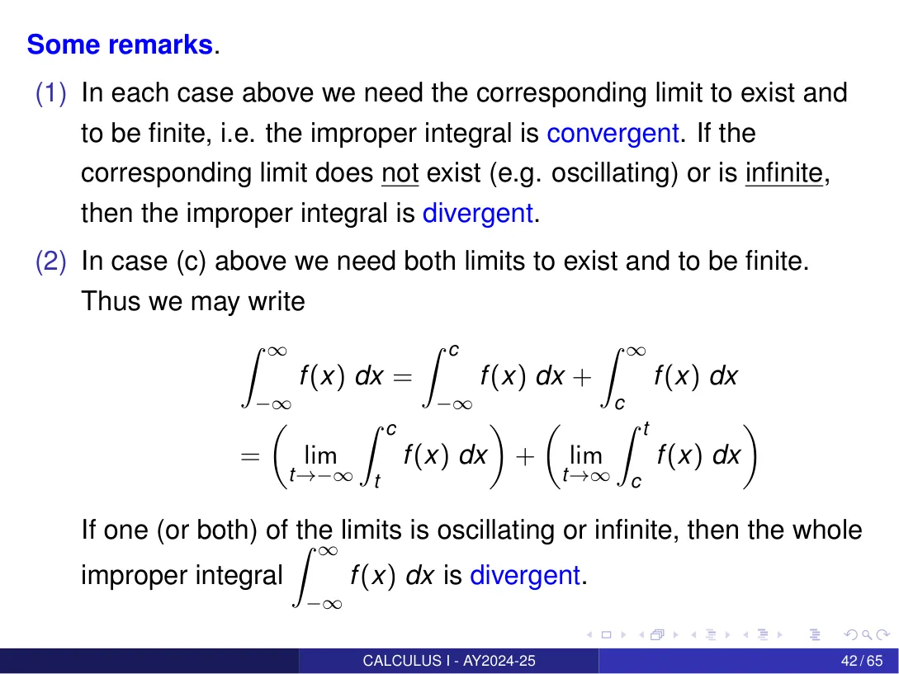
(1) In each case we need the limit to exist and be finite; a limit that does not exist (oscillating, e.g. $\int_1^\infty\sin x\,dx$) or is infinite means divergence. (2) In case (c) both limits must exist and be finite: $\int_{-\infty}^\infty f=\lim_{t\to-\infty}\int_t^cf+\lim_{t\to\infty}\int_c^tf$ with two independent variables; if one or both of them oscillates or is infinite, the whole integral diverges.
(1) Mỗi trường hợp cần giới hạn tồn tại và hữu hạn; giới hạn không tồn tại (dao động, ví dụ $\int_1^\infty\sin x\,dx$) hoặc vô hạn nghĩa là phân kỳ. (2) Ở trường hợp (c) cả hai giới hạn phải tồn tại và hữu hạn: $\int_{-\infty}^\infty f=\lim_{t\to-\infty}\int_t^cf+\lim_{t\to\infty}\int_c^tf$ với hai biến độc lập; nếu một hoặc cả hai dao động hay vô hạn thì cả tích phân phân kỳ.
Show that $\displaystyle\int_1^\infty\sin x\,dx$ diverges although the integrand is bounded.
Chứng minh $\displaystyle\int_1^\infty\sin x\,dx$ phân kỳ mặc dù hàm dưới dấu tích phân bị chặn.
Answer and solution · Đáp án và lời giải
Answer · Đáp án: diverges (the limit oscillates)
$\int_1^t\sin x\,dx=\cos1-\cos t$, and $\cos t$ keeps oscillating between $-1$ and $1$ as $t\to\infty$: the limit does not exist.
$\int_1^t\sin x\,dx=\cos1-\cos t$, và $\cos t$ cứ dao động giữa $-1$ và $1$ khi $t\to\infty$: giới hạn không tồn tại.
Remark (3): not $\lim_{t\to\infty}\int_{-t}^t$ · Nhận xét (3): không phải $\lim_{t\to\infty}\int_{-t}^t$
★★★ Core · Cốt lõi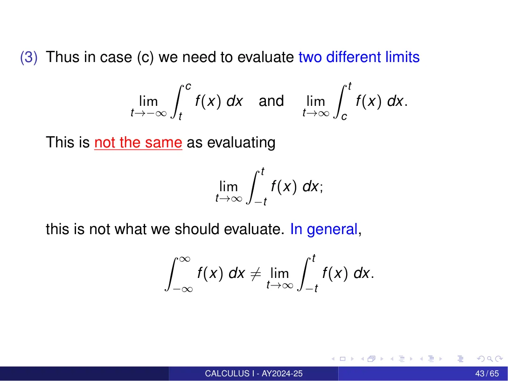
In case (c) we evaluate two different limits, $\lim_{t\to-\infty}\int_t^cf$ and $\lim_{t\to\infty}\int_c^tf$. That is not the same as evaluating $\lim_{t\to\infty}\int_{-t}^tf$; in general $\int_{-\infty}^\infty f\ne\lim_{t\to\infty}\int_{-t}^tf$. The symmetric limit ties the two ends together and can hide a divergence.
Ở trường hợp (c) ta tính hai giới hạn khác nhau, $\lim_{t\to-\infty}\int_t^cf$ và $\lim_{t\to\infty}\int_c^tf$. Điều này không giống với việc tính $\lim_{t\to\infty}\int_{-t}^tf$; nói chung $\int_{-\infty}^\infty f\ne\lim_{t\to\infty}\int_{-t}^tf$. Giới hạn đối xứng buộc hai đầu đi cùng nhau và có thể che giấu sự phân kỳ.
A very common mistake: using the symmetric limit to "prove" convergence of an odd function over the real line.
Lỗi rất hay gặp: dùng giới hạn đối xứng để "chứng minh" sự hội tụ của hàm lẻ trên toàn trục thực.
Example: $\int_{-\infty}^\infty x\,dx\ne\lim_{t\to\infty}\int_{-t}^tx\,dx$ · Ví dụ: $\int_{-\infty}^\infty x\,dx\ne\lim_{t\to\infty}\int_{-t}^tx\,dx$
★★★ Core · Cốt lõi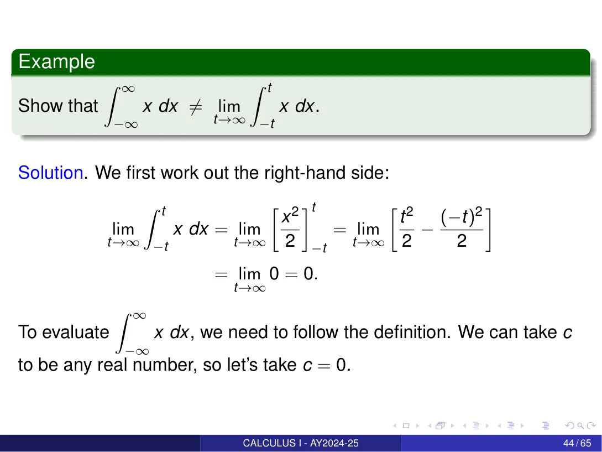
Right-hand side first: $\lim_{t\to\infty}\int_{-t}^tx\,dx=\lim_{t\to\infty}\left[\frac{t^2}2-\frac{(-t)^2}2\right]=\lim0=0$ ($x$ is odd). For the left-hand side we must follow the definition with a split point; take $c=0$: $\int_{-\infty}^\infty x\,dx=\int_{-\infty}^0x\,dx+\int_0^\infty x\,dx$.
Vế phải trước: $\lim_{t\to\infty}\int_{-t}^tx\,dx=\lim_{t\to\infty}\left[\frac{t^2}2-\frac{(-t)^2}2\right]=\lim0=0$ ($x$ là hàm lẻ). Với vế trái ta phải theo đúng định nghĩa với một điểm tách; lấy $c=0$: $\int_{-\infty}^\infty x\,dx=\int_{-\infty}^0x\,dx+\int_0^\infty x\,dx$.
The example concluded: it diverges · Kết thúc ví dụ: phân kỳ
★★★ Core · Cốt lõi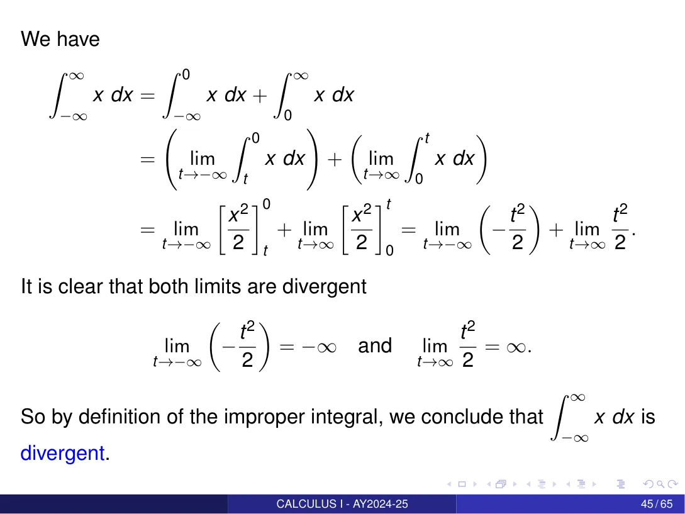
$\int_{-\infty}^0x\,dx=\lim_{t\to-\infty}\left[-\frac{t^2}2\right]=-\infty$ and $\int_0^\infty x\,dx=\lim_{t\to\infty}\frac{t^2}2=\infty$. Both limits diverge, so by definition $\int_{-\infty}^\infty x\,dx$ diverges, even though $\lim_{t\to\infty}\int_{-t}^tx\,dx=0$.
$\int_{-\infty}^0x\,dx=\lim_{t\to-\infty}\left[-\frac{t^2}2\right]=-\infty$ và $\int_0^\infty x\,dx=\lim_{t\to\infty}\frac{t^2}2=\infty$. Cả hai giới hạn đều phân kỳ, nên theo định nghĩa $\int_{-\infty}^\infty x\,dx$ phân kỳ, dù $\lim_{t\to\infty}\int_{-t}^tx\,dx=0$.
Show that $\displaystyle\int_{-\infty}^\infty\frac{x}{1+x^2}\,dx$ diverges although $\displaystyle\lim_{t\to\infty}\int_{-t}^t\frac x{1+x^2}dx=0$.
Chứng minh $\displaystyle\int_{-\infty}^\infty\frac{x}{1+x^2}\,dx$ phân kỳ mặc dù $\displaystyle\lim_{t\to\infty}\int_{-t}^t\frac x{1+x^2}dx=0$.
Answer and solution · Đáp án và lời giải
Answer · Đáp án: diverges
The integrand is odd, so $\int_{-t}^t=0$ for every $t$. But $\int_0^t\frac x{1+x^2}dx=\frac12\ln(1+t^2)\to\infty$ as $t\to\infty$ (and the left half tends to $-\infty$), so the improper integral diverges.
Hàm dưới dấu tích phân là hàm lẻ nên $\int_{-t}^t=0$ với mọi $t$. Nhưng $\int_0^t\frac x{1+x^2}dx=\frac12\ln(1+t^2)\to\infty$ khi $t\to\infty$ (và nửa trái tiến đến $-\infty$), nên tích phân suy rộng phân kỳ.
Warning: $\infty-\infty$ is indeterminate · Cảnh báo: $\infty-\infty$ là dạng vô định
★★★ Core · Cốt lõi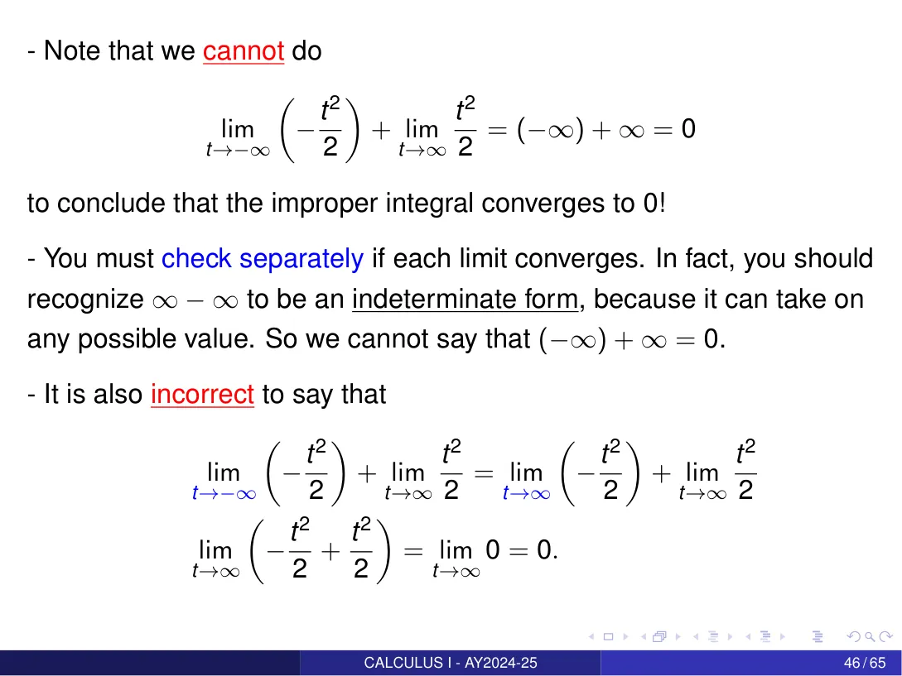
Never conclude $\lim_{t\to-\infty}\left(-\frac{t^2}2\right)+\lim_{t\to\infty}\frac{t^2}2=(-\infty)+\infty=0$ and say that the integral converges to $0$: each limit must be checked separately, and $\infty-\infty$ is an indeterminate form that can take any value. It is also wrong to merge the two limits into one, $\lim_{t\to\infty}\left(-\frac{t^2}2+\frac{t^2}2\right)=0$, because the two variables are independent.
Đừng bao giờ kết luận $\lim_{t\to-\infty}\left(-\frac{t^2}2\right)+\lim_{t\to\infty}\frac{t^2}2=(-\infty)+\infty=0$ rồi nói tích phân hội tụ về $0$: mỗi giới hạn phải được kiểm tra riêng, và $\infty-\infty$ là dạng vô định có thể nhận giá trị bất kỳ. Cũng sai khi gộp hai giới hạn thành một, $\lim_{t\to\infty}\left(-\frac{t^2}2+\frac{t^2}2\right)=0$, vì hai biến là độc lập.
Explain why $\infty-\infty$ can be any number by computing $\lim_{t\to\infty}\left[(t+5)-t\right]$ and $\lim_{t\to\infty}\left[(t+1)-(t+5)\right]$.
Giải thích vì sao $\infty-\infty$ có thể là số bất kỳ bằng cách tính $\lim_{t\to\infty}\left[(t+5)-t\right]$ và $\lim_{t\to\infty}\left[(t+1)-(t+5)\right]$.
Answer and solution · Đáp án và lời giải
Answer · Đáp án: $5$ and $-4$ (both have the form "$\infty-\infty$")
Both expressions have the form $\infty-\infty$, yet $(t+5)-t=5$ and $(t+1)-(t+5)=-4$ for every $t$: the form $\infty-\infty$ has no fixed value, so it cannot be used to decide convergence.
Cả hai biểu thức đều có dạng $\infty-\infty$, nhưng $(t+5)-t=5$ và $(t+1)-(t+5)=-4$ với mọi $t$: dạng $\infty-\infty$ không có giá trị cố định nên không thể dùng nó để kết luận hội tụ.